Entrare nell'area
L'area riservata si apre da /area-riservata. Si entra con il proprio indirizzo email e una password personale: non esistono credenziali condivise, perché è dall'indirizzo che il programma capisce chi sei e quindi che cosa puoi vedere.
Alla prima volta la password non c'è ancora: si chiede con il pulsante Richiedi la prima password, che la invia all'indirizzo registrato dall'amministratore. La stessa strada vale se la password si dimentica.
-
Apri la schermata di accesso
Inserisci l'indirizzo email con cui sei stato registrato e la password. La casella Ricorda il mio indirizzo su questo computer memorizza solo l'email: la password resta al gestore password del browser, l'applicazione non la scrive da nessuna parte.
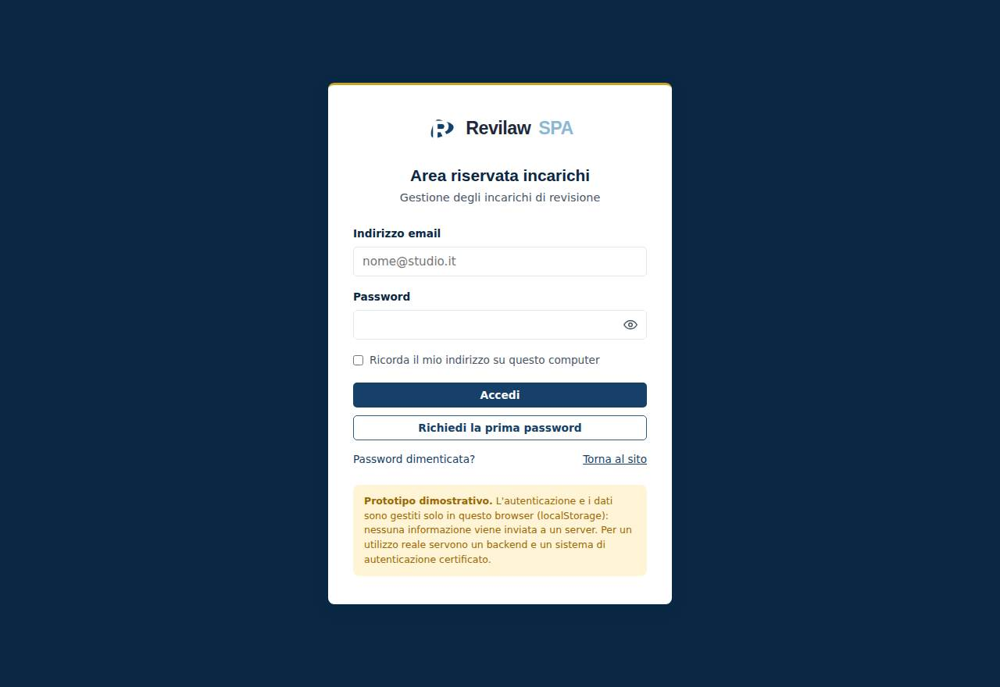
Schermata di accesso. Sotto il modulo c'è sempre indicato se l'ambiente è dimostrativo o con accesso protetto. -
Se è la prima volta, chiedi la password
Il pulsante Richiedi la prima password chiede l'indirizzo e invia le istruzioni per impostarla. Funziona solo per gli indirizzi già abilitati dall'amministratore: se il tuo non è stato registrato, la richiesta non produce nulla e devi rivolgerti a lui.
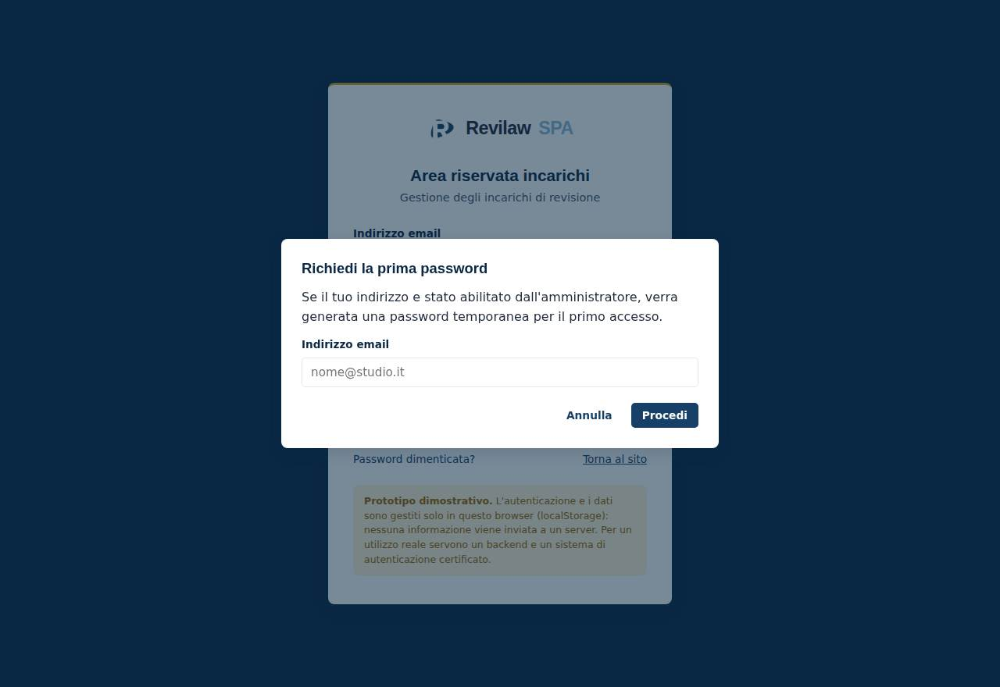
Prima password. La stessa finestra serve anche per il recupero, dal collegamento «Password dimenticata?».
Regole della password
- Requisiti minimi
- Almeno otto caratteri, con una lettera maiuscola, una minuscola e una cifra. La password si sceglie al primo accesso e si può cambiare in qualsiasi momento.
- Tentativi falliti
- Dopo cinque tentativi sbagliati l'utenza si blocca per cinque minuti e il blocco viene registrato nel Registro modifiche. Non serve chiamare nessuno: passati i cinque minuti si riprova.
- Chi conosce la password
- Nessuno oltre a te. L'amministratore registra l'indirizzo e assegna il ruolo, ma non imposta né vede le password: chi le dimentica le rigenera da solo dalla schermata di accesso.
- Salvataggio nel browser
- Il modulo di accesso è compatibile con il gestore password del browser, che può quindi proporre di salvarla e ricompilarla. L'applicazione non scrive la password da nessuna parte.
Dopo 30 minuti di inattività la sessione si chiude da sola e occorre rientrare. Anche chiudendo la scheda del browser la sessione termina. È una misura voluta, perché l'area contiene dati di clienti e compensi.
Se dopo l'accesso compare la schermata «Nessuna sezione disponibile», l'utenza è valida ma il ruolo assegnato non consente alcuna sezione. Chiedi all'amministratore di assegnarti i permessi.
Come si legge una schermata
Tutte le sezioni sono costruite allo stesso modo. Imparata una, si sanno usare le altre.
- Menu di sinistra
- Le sezioni consentite al tuo ruolo, raggruppate per argomento. In fondo ci sono il tuo nome, il ruolo e, se sei coordinatore o vice, le regioni assegnate. Il pulsante Esci chiude la sessione.
- Intestazione
- In alto a sinistra il titolo della sezione con una riga di spiegazione; a destra i comandi principali, per esempio «+ Nuovo incarico» o «Esporta CSV». Se un comando non compare, il tuo ruolo non ha la scrittura su quella sezione.
- Schede
- Molte sezioni sono divise in schede: Incarichi ha Attivi, Terminati, Dismessi e Non accettati; Aderenti Revilaw ha Attive, Disattivate ed Eliminate; Coordinatori e vice ha Coordinatori, Vice coordinatori e Per regione. La scheda scelta resta quella su cui torni.
- Barra dei filtri
- Sopra ogni tabella: una ricerca che guarda tutte le colonne e un filtro per ciascuna colonna, in cui si può scrivere liberamente o scegliere un valore suggerito. Quando un filtro è attivo compare il conteggio delle righe visibili sul totale.
- Esporta CSV
- Scarica esattamente quello che vedi, filtri compresi. Il file si apre in Excel: separatore punto e virgola e testo protetto contro l'interpretazione automatica delle formule.
- Righe cliccabili
- Nelle tabelle principali un clic sulla riga apre il dettaglio. I numeri delle colonne di conteggio sono cliccabili a loro volta e aprono l'elenco di ciò che contano.
- Menu Azioni
- L'ultima colonna delle righe raccoglie i comandi in un menu che si apre dal pulsante Azioni. A menu aperto il pulsante resta acceso, così si vede da quale riga escono le voci.
- Finestre
- Le schede delle persone, gli elenchi di approfondimento e le conferme si aprono in una finestra sopra la pagina. Si chiudono con il pulsante in fondo, oppure cliccando fuori quando l'operazione non richiede una scelta esplicita.
- Avvisi
- Le operazioni riuscite e gli errori compaiono per pochi secondi in basso a destra.
- Schermo stretto
- Su telefono e tablet il menu si apre con il pulsante a tre righe in alto a destra e ogni riga di tabella diventa una scheda con le etichette dei campi, così non serve scorrere in orizzontale.
Quando lavorate in più persone
L'area riservata è pensata per l'uso simultaneo. Due funzioni servono a evitare che due persone si sovrascrivano a vicenda.
Segnalazione di modifica in corso. Se apri la scheda di un incarico o di una persona che un altro utente sta già modificando, compare un avviso con il suo nome. Non sei bloccato, ma sai che conviene accordarsi prima di salvare.
Aggiornamento rimandato. Quando arrivano dati aggiornati da un altro utente mentre stai scrivendo in una finestra, la schermata non si ridisegna sotto le mani: l'aggiornamento viene applicato appena chiudi.
La mappa delle sezioni
Il menu di sinistra è sempre lo stesso per tutti, ma mostra solo le sezioni che il tuo ruolo può vedere: se una voce non compare, non è nascosta per errore, semplicemente non rientra nei tuoi permessi. Le voci sono raggruppate per argomento.
- Cruscotto
- Il quadro di sintesi: incarichi attivi, compensi dell'anno, incarichi in scadenza e scaduti, proposte da confermare, andamento dei compensi per anno.
- Incarichi
- L'elenco completo, diviso in Attivi, Terminati, Dismessi e Non accettati, con ricerca, filtri per colonna ed esportazione CSV. Da qui si apre il dettaglio e si creano nuovi incarichi.
- Richieste di correzione
- La via di servizio per far correggere un dato sbagliato: si segnala all'equity partner, la richiesta resta scritta e raccoglie tutti i messaggi che la riguardano. La vedono tutti, perché è proprio chi non può modificare ad averne bisogno.
- Aderenti Revilaw
- L'anagrafica delle persone: nominativi, contatti, sede e ruoli professionali (responsabile qualità, responsabile incarico, coordinatore, vice).
- Coordinatori e vice
- Una lettura dell'anagrafica per territorio: chi coordina quali regioni e quanti incarichi attivi ci sono in ciascuna.
- Responsabili
- La stessa anagrafica letta per responsabilità: chi è responsabile qualità e chi responsabile incarico, con gli incarichi che ricopre.
- Fatturazione
- Il piano delle scadenze di fatturazione per anno e periodicità (mensile, trimestrale, annuale o specifica), con lo stato di ciascuna rata.
- Report compensi
- I compensi letti per anno, con i confronti e le ripartizioni.
- Comunicazione teams di revisione
- Invio di messaggi ai team che lavorano sugli incarichi, con variabili che si compilano da sole per ogni destinatario. Da qui l'amministratore annuncia anche agli iscritti all'area gli aggiornamenti del programma.
- Newsletter commerciali
- Preparazione e invio delle newsletter ai contatti commerciali e agli iscritti raccolti dal sito.
- Iscrizioni Eventi NGB
- Gli iscritti agli eventi, con conferme, presenze e note.
- Sondaggi
- I questionari interni: compilazione e risultati.
- Registro modifiche
- Il registro di tutte le operazioni: chi ha fatto cosa e quando. Non si può cancellare.
- Utenti
- Chi può entrare e con quale ruolo. Riservata all'amministratore e al titolare.
- Ruoli e permessi
- La configurazione dei ruoli, sezione per sezione. Riservata all'amministratore e al titolare.
- Dati e backup
- Importazione, esportazione e copie di sicurezza dell'archivio. Riservata al titolare.
Coordinatori e vice e Responsabili sono due modi di leggere l'anagrafica: seguono il permesso di Aderenti Revilaw. Allo stesso modo il dettaglio di un incarico, la creazione guidata e la lettera d'incarico seguono il permesso di Incarichi.
Come funzionano i permessi
Ogni utente ha un ruolo. Il ruolo stabilisce, per ciascuna delle otto sezioni configurabili, uno di tre livelli.
Le sezioni che si configurano dal ruolo
Sono otto: Cruscotto, Incarichi, Aderenti Revilaw, Fatturazione, Report compensi, Comunicazione teams di revisione, Sondaggi, Registro modifiche. Per ognuna l'amministratore sceglie il livello.
Le sezioni che non passano dal ruolo
Sei sezioni hanno regole proprie, indipendenti dal ruolo, perché toccano la sicurezza, l'invio di messaggi a nome dello studio oppure — al contrario — devono restare aperte a tutti.
- Utenti, Ruoli e permessi
- Solo amministratore o titolare. Nessun ruolo personalizzato può concederle.
- Dati e backup
- Solo il titolare. Nemmeno un amministratore la vede.
- Iscrizioni Eventi NGB
- Amministratore, titolare o le singole persone abilitate a mano.
- Newsletter commerciali
- Come sopra. I ruoli «solo sondaggio» restano sempre esclusi.
- Richieste di correzione
- Aperta a tutti, e non si può togliere: è la via con cui chi non ha la scrittura fa correggere un dato. Restano fuori solo i ruoli «solo sondaggio». Chi vede quali richieste non dipende dal ruolo ma dalla scheda in Aderenti Revilaw: vedi il capitolo Chiedere la correzione di un dato.
Due regole che valgono sopra tutto
Il filtro per territorio. Chi accede con il ruolo Coordinatore territoriale o Vice coordinatore territoriale vede soltanto gli incarichi delle regioni spuntate sulla propria scheda in Aderenti Revilaw. Il filtro non si può disattivare e vale ovunque: elenco, dettaglio, cruscotto, fatturazione, esportazioni.
L'eliminazione definitiva. Cancellare per sempre un incarico, con il suo piano di fatturazione, resta all'amministratore e al titolare. Gli altri ruoli con la scrittura chiudono un incarico con Termina o Dimissioni: operazioni reversibili che conservano tutto lo storico.
Valgono dentro il programma e servono a tenere ognuno nella sua parte, prevenendo errori. La protezione vera dei dati più delicati sta nelle regole del server, non in questa configurazione.
Matrice ruoli e sezioni
Il quadro di riferimento con i valori di partenza dei ruoli predefiniti. Per Responsabile qualità, Procuratore e i ruoli personalizzati l'amministratore può cambiare ogni casella; per Coordinatore e Vice può cambiare i livelli, ma non il filtro per territorio.
| Sezione | Amministratore | Titolare | Resp. qualità | Procuratore | Coordinatore e Vice | Solo sondaggio |
|---|---|---|---|---|---|---|
| Cruscotto | Scrittura | Scrittura | Scrittura | Scrittura | Lettura, solo sue regioni | Nascosta |
| Incarichi | Scrittura | Scrittura | Scrittura | Scrittura | Lettura, solo sue regioni | Nascosta |
| Aderenti Revilaw | Scrittura | Scrittura | Scrittura | Scrittura | Lettura | Nascosta |
| Coordinatori e vice | Scrittura | Scrittura | Scrittura | Scrittura | Lettura | Nascosta |
| Responsabili | Scrittura | Scrittura | Scrittura | Scrittura | Lettura | Nascosta |
| Fatturazione | Scrittura | Scrittura | Scrittura | Scrittura | Lettura, solo sue regioni | Nascosta |
| Report compensi | Scrittura | Scrittura | Scrittura | Scrittura | Lettura, solo sue regioni | Nascosta |
| Comunicazione teams | Scrittura | Scrittura | Scrittura | Scrittura | Lettura | Nascosta |
| Sondaggi | Scrittura | Scrittura | Scrittura | Scrittura | Lettura | Unica sezione |
| Registro modifiche | Scrittura | Scrittura | Scrittura | Scrittura | Lettura | Nascosta |
| Richieste di correzione | Tutte | Tutte | Le sue | Le sue | Le sue e del territorio | Nascosta |
| Newsletter commerciali | Sempre | Sempre | Se abilitato | Se abilitato | Se abilitato | Mai |
| Iscrizioni Eventi NGB | Sempre | Sempre | Se abilitato | Se abilitato | Se abilitato | Mai |
| Utenti | Scrittura | Scrittura | Nascosta | Nascosta | Nascosta | Nascosta |
| Ruoli e permessi | Scrittura | Scrittura | Nascosta | Nascosta | Nascosta | Nascosta |
| Dati e backup | Nascosta | Scrittura | Nascosta | Nascosta | Nascosta | Nascosta |
| Elimina incarico | Sì | Sì | No | No | No | No |
I livelli indicati per Responsabile qualità e Procuratore sono quelli di partenza: entrambi nascono con la scrittura ovunque e vanno ristretti dalla sezione Ruoli e permessi se lo studio vuole limitarli.
Indice per ruolo e permessi
Trova il tuo ruolo e leggi che cosa comporta. Ogni scheda dice quali sezioni vedi, che cosa puoi fare, che cosa non puoi fare e quali capitoli del manuale ti riguardano davvero.
Amministratore
- Vede
- Tutte le sezioni tranne Dati e backup. Tutti gli incarichi, di ogni regione.
- Può fare
- Creare, modificare, rinnovare, terminare ed eliminare definitivamente gli incarichi. Registrare utenti, assegnare e configurare i ruoli.
- Non può
- Entrare in Dati e backup: importazioni, esportazioni e copie di sicurezza restano al titolare.
Titolare
- Vede
- Tutto, compresa la sezione Dati e backup.
- Può fare
- Tutto quanto può l'amministratore, più importazione dell'archivio reale, esportazione completa e copie di sicurezza. Riceve le allerte di sblocco calcolo sul cruscotto.
- Non può
- Nulla gli è precluso. Per questo il ruolo non si assegna: coincide con l'indirizzo del proprietario.
Responsabile qualità
- Vede
- Le otto sezioni operative, tutti gli incarichi senza limiti di territorio. Newsletter ed Eventi solo se abilitato a parte.
- Può fare
- Creare e modificare incarichi, gestire l'anagrafica, la fatturazione e le comunicazioni ai team. Chiudere un incarico con Termina o Dimissioni.
- Non può
- Gestire utenti e ruoli. Eliminare definitivamente un incarico.
Procuratore
- Vede
- Come il Responsabile qualità: le otto sezioni operative e tutti gli incarichi.
- Può fare
- Le stesse operazioni del Responsabile qualità. I due ruoli si distinguono per la funzione nello studio, non per i permessi di partenza.
- Non può
- Gestire utenti e ruoli. Eliminare definitivamente un incarico.
Coordinatore territoriale
- Vede
- Tutte le sezioni operative, ma solo gli incarichi delle regioni assegnate sulla sua scheda in Aderenti Revilaw. Il limite vale anche per cruscotto, fatturazione ed esportazioni.
- Può fare
- Consultare. All'ingresso una finestra ricorda regioni, limite e livello di accesso.
- Non può
- Modificare nulla: nessun pulsante di creazione o modifica. Le correzioni si richiedono all'equity partner.
Vice coordinatore territoriale
- Vede
- Esattamente come il Coordinatore territoriale: le regioni spuntate sulla propria scheda, e nient'altro.
- Può fare
- Consultare il proprio territorio. Un vice può coprire regioni diverse da quelle del coordinatore: contano solo le spunte della sua scheda.
- Non può
- Modificare. Senza alcuna regione spuntata non vede alcun incarico: è la regola di sicurezza, non un guasto.
Ruolo personalizzato
- Vede
- Quello che l'amministratore ha scelto: per ciascuna delle otto sezioni configurabili, nascosta, sola lettura o scrittura.
- Può fare
- Quanto consentito sezione per sezione. Adatto a profili come segreteria, consulente esterno o revisore junior.
- Non può
- Accedere a Utenti, Ruoli e Dati. E non è limitabile per territorio: il filtro per regione esiste solo nei due ruoli di sistema.
Sondaggio (questionario)
- Vede
- La sola sezione Sondaggi. Nessun incarico, nessuna anagrafica, nessun compenso.
- Può fare
- Compilare il questionario a cui è stato invitato.
- Non può
- Raggiungere qualunque altra sezione, newsletter comprese. È il ruolo per chi non fa parte dello staff.
Sondaggio (sola visualizzazione)
- Vede
- La sola sezione Sondaggi, in lettura: il riepilogo dei risultati.
- Può fare
- Consultare gli esiti del questionario.
- Non può
- Compilare, né raggiungere altre sezioni.
Il ruolo di accesso vive nella sezione Utenti ed è agganciato all'indirizzo email. Le spunte nella scheda di Aderenti Revilaw (responsabile qualità, coordinatore, vice) descrivono la funzione professionale della persona e, per i coordinatori, il territorio: da sole non danno alcun permesso.
Amministratore e Titolare
Accesso completo a tutte le sezioni e a tutti gli incarichi, senza limiti di territorio. Sono gli unici che possono creare utenti, configurare i ruoli ed eliminare definitivamente un incarico. Il Titolare ha in più la sezione Dati e backup, che nemmeno un amministratore vede.
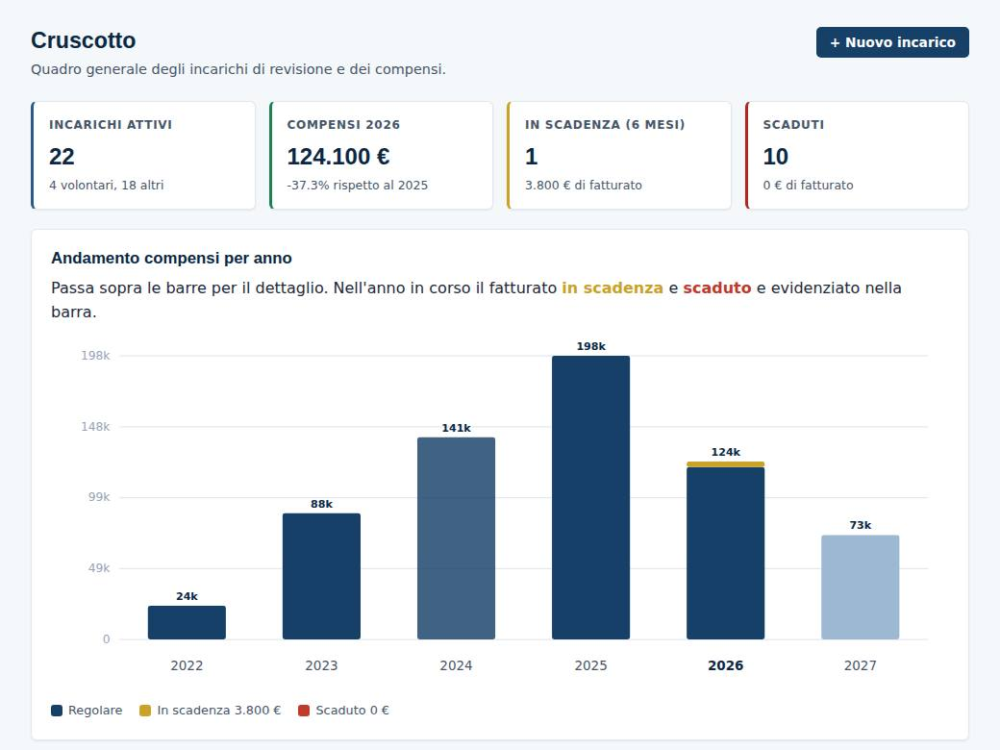
Il menu dell'amministratore contiene tutte le voci. Le sezioni riservate (Utenti, Ruoli e permessi e, per il solo titolare, Dati e backup) stanno in fondo, separate dal lavoro quotidiano.
Responsabile qualità e Procuratore
Sono i ruoli operativi: nascono con la scrittura su tutte le otto sezioni configurabili e vedono tutti gli incarichi, senza limiti di territorio. Non gestiscono utenti né ruoli, e non possono eliminare definitivamente un incarico: lo chiudono con Termina o Dimissioni.
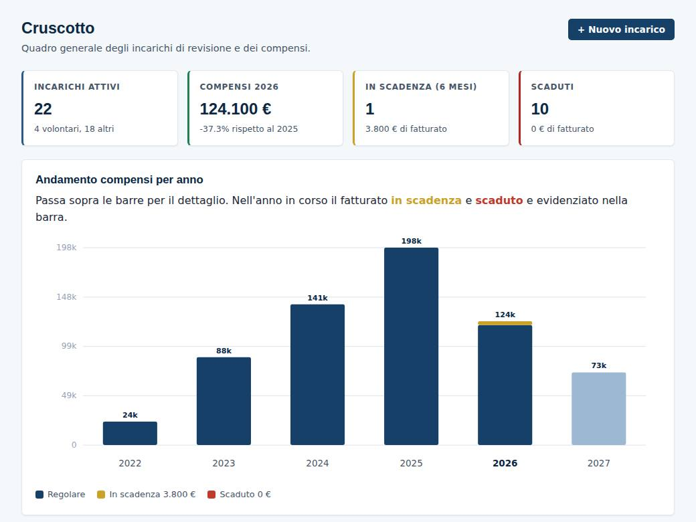
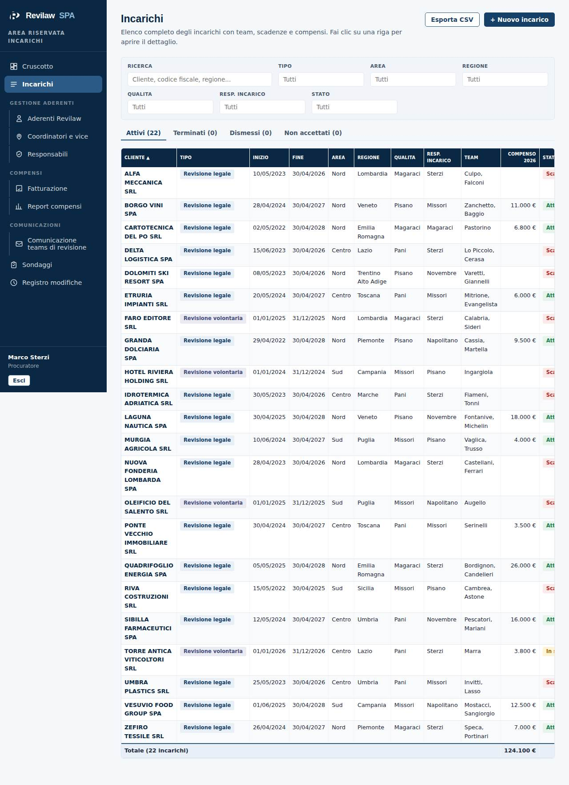
Questi due ruoli partono con tutto in scrittura perché ereditano il funzionamento precedente all'introduzione dei permessi. Se lo studio vuole restringerli, per esempio togliendo il Registro modifiche o mettendo la Fatturazione in sola lettura, si interviene dalla sezione Ruoli e permessi senza toccare gli utenti gia assegnati.
Coordinatore territoriale e Vice
Consultano il lavoro del proprio territorio. Vedono soltanto gli incarichi delle regioni spuntate sulla loro scheda in Aderenti Revilaw, e li vedono in sola visualizzazione. Il filtro per territorio è parte del ruolo e non si può disattivare: è per questo che i due ruoli sono marcati «di sistema».
All'ingresso il perimetro è dichiarato
Al primo accesso di ogni sessione compare una finestra che ricorda ruolo, regioni assegnate, limite agli incarichi di quelle regioni e livello di accesso. Serve a non far scambiare i numeri del proprio territorio per quelli dello studio.
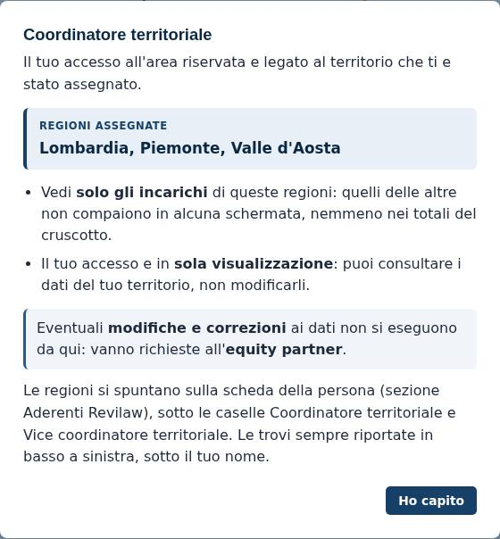
Il cruscotto si ferma al territorio
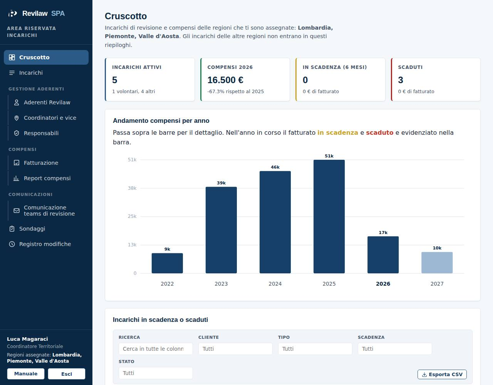
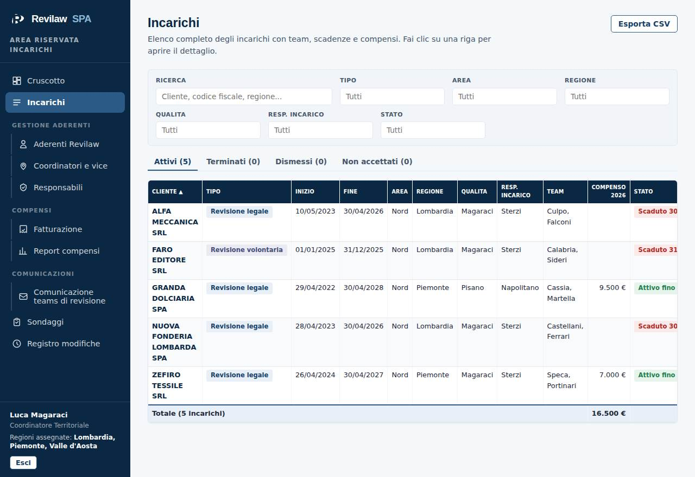
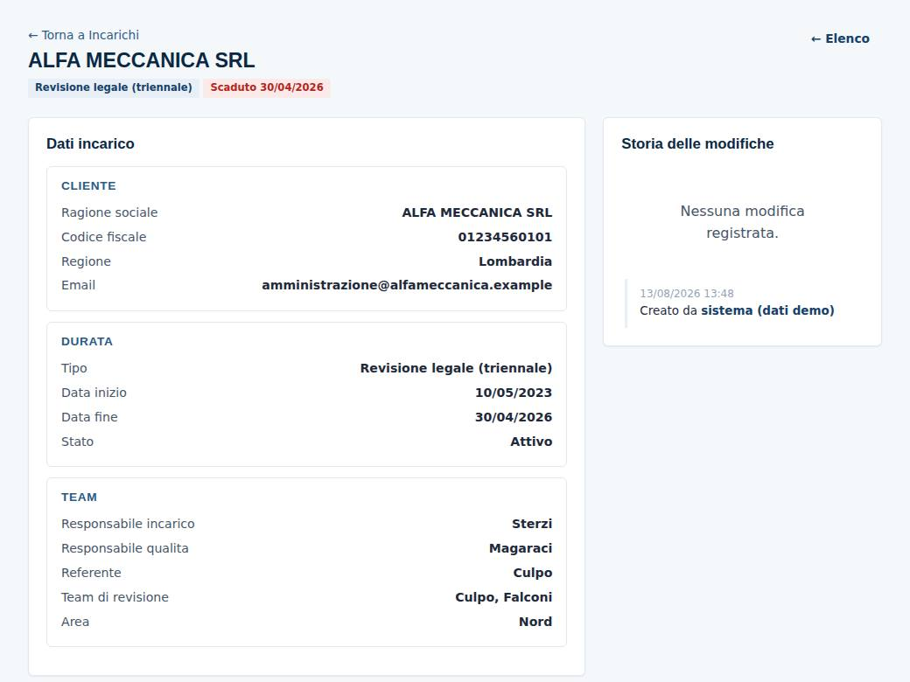
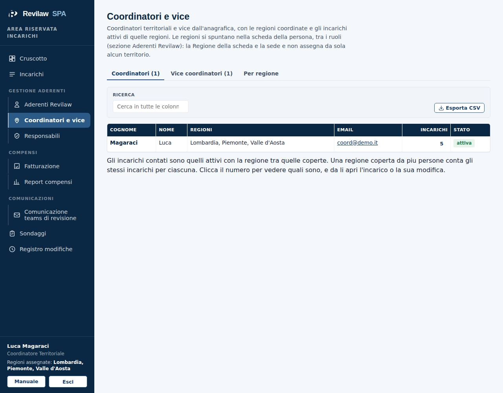
Un dato sbagliato si fa correggere, non si corregge
La sola visualizzazione non lascia senza strumenti: la sezione Richieste di correzione è aperta anche a questi due ruoli. Si segnala il dato a un equity partner, la richiesta resta scritta e la vedono, oltre a chi la scrive, il coordinatore e il vice della regione a cui si riferisce. Il procedimento è descritto in Chiedere la correzione di un dato.
Quando non c'è ancora nessuna regione
Se sulla scheda della persona non è spuntata alcuna regione, il ruolo non vede alcun incarico. Non è un guasto: è la regola di sicurezza, che in mancanza di indicazioni chiude invece di aprire.
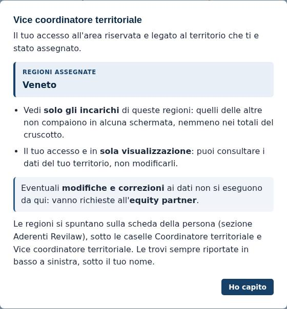
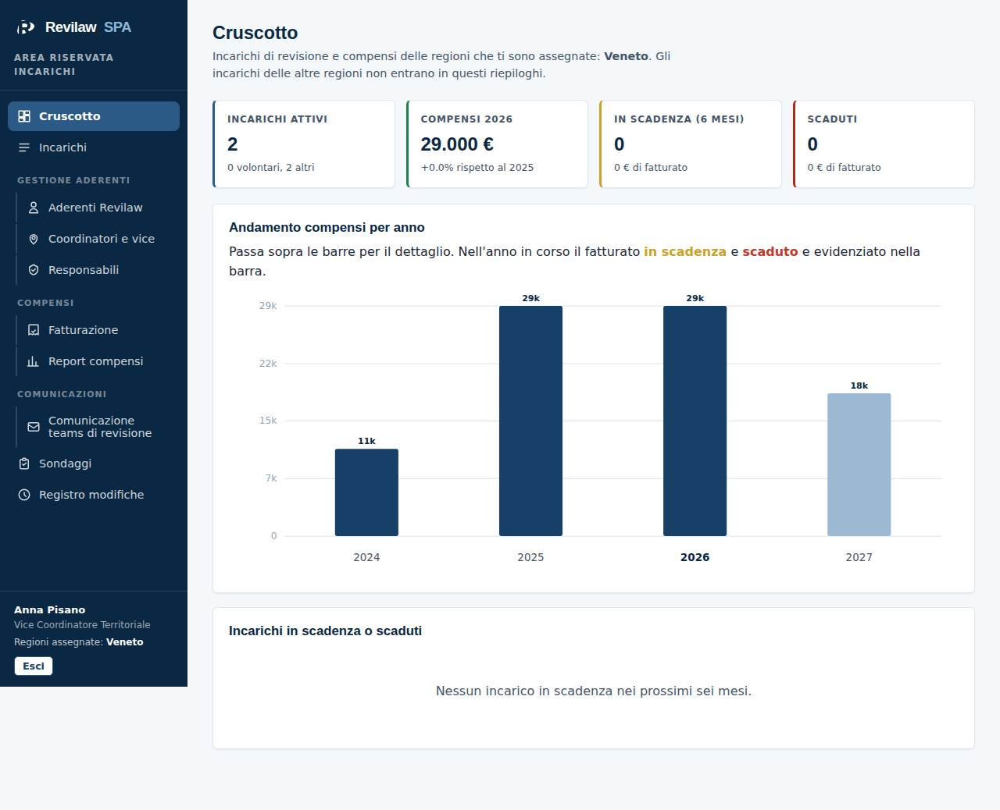
Ruoli personalizzati
L'amministratore può creare quanti ruoli servono e scegliere, per ciascuna delle otto sezioni configurabili, se è nascosta, in sola lettura o in scrittura. È lo strumento giusto per profili come «segreteria», «consulente esterno» o «revisore junior».
Il filtro per territorio è legato ai due ruoli di sistema Coordinatore territoriale e Vice coordinatore territoriale. Un ruolo creato a mano, anche se lo chiami «Coordinatore regionale» e gli dai gli stessi permessi, non viene filtrato per regione: vede tutti gli incarichi. Per limitare qualcuno al proprio territorio bisogna assegnargli uno dei due ruoli di sistema.
Ruoli solo sondaggio
Servono per invitare a un questionario chi non fa parte dello staff. Chi entra con uno di questi ruoli vede una sola voce di menu, Sondaggi, e nient'altro: né incarichi, né anagrafica, né compensi. «Questionario» può compilare, «sola visualizzazione» vede solo il riepilogo.
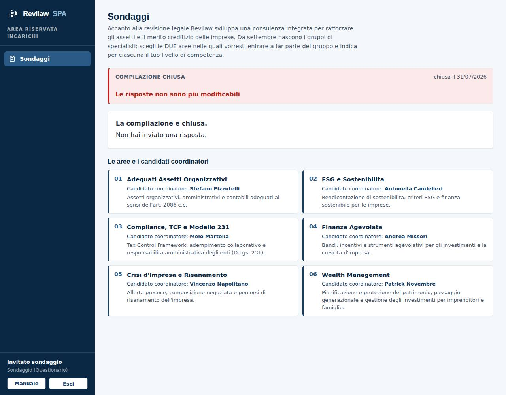
Il ciclo di vita di un incarico
Capire in quale stato si trova un incarico spiega quasi sempre perché compare, o non compare, in una certa schermata.
Gli stati
- Proposta
- L'incarico è stato preparato ma il cliente non ha ancora accettato. Compare nella scheda Attivi e nel riquadro delle proposte del cruscotto, ma non entra nei totali dei compensi né nel piano di fatturazione. È lo stato di partenza di ogni incarico nuovo o rinnovato.
- Attivo
- L'incarico è in corso. Entra in tutti i conteggi. Lo stato che vedi in tabella non è la parola «attivo» ma la sua scadenza, perché è quella l'informazione utile.
- Terminato
- L'incarico si è concluso alla scadenza naturale. Passa alla scheda Terminati e resta consultabile con tutto il suo storico. L'operazione si annulla riattivando l'incarico.
- Dimesso
- Il revisore si è dimesso prima della scadenza. Passa alla scheda Dismessi e conserva la data delle dimissioni. Anche questa operazione è reversibile.
- Non accettato
- Il cliente ha rifiutato la proposta. Passa alla scheda Non accettati. Serve a tenere traccia delle proposte non andate a buon fine senza mescolarle agli incarichi chiusi.
Lo stato di scadenza
Per gli incarichi in corso la colonna Stato mostra un'etichetta colorata calcolata sulla data di fine, o sulla data di rinnovo se c'è.
Il conto dei sei mesi non trabocca a fine mese: partendo dal 31 agosto il limite è il 28 febbraio, non il 3 marzo. Se la data di fine contiene una nota anziché una data vera, l'etichetta riporta la nota così com'è, senza inventare una scadenza.
Le operazioni che cambiano stato
- Conferma
- Dal cruscotto, trasforma una proposta in incarico attivo. Da quel momento compensi e fatturazione lo conteggiano.
- Rinnova
- Apre la creazione guidata con i dati già compilati per il nuovo periodo. Il rinnovo nasce come proposta: va confermato a sua volta.
- Termina
- Chiude l'incarico alla scadenza naturale. Reversibile.
- Dimissioni
- Chiude l'incarico per dimissioni, registrando la data. Reversibile.
- Non accettato
- Segna la proposta come rifiutata dal cliente. Reversibile.
- Elimina
- Cancella l'incarico e il suo piano di fatturazione. Non è reversibile ed è riservata ad amministratore e titolare. Per chiudere un incarico usate sempre Termina o Dimissioni.
Dal dettaglio di un incarico si genera la lettera su carta intestata dello studio, pronta per la stampa o per il PDF. Se modifichi la proposta, la lettera si rigenera con i dati aggiornati: conviene quindi stamparla solo quando i dati sono definitivi.
Procedure passo passo
Le operazioni ricorrenti, nell'ordine in cui si incontrano. Ogni procedura indica in testa chi può eseguirla.
Creare un incarico
La creazione è guidata in sei passi. I passi in cima sono cliccabili: si può tornare indietro o saltare avanti conservando quanto già inserito, perché il controllo completo scatta solo al salvataggio finale.
-
Cliente
Si parte dall'anagrafica della società da revisionare. L'unico campo obbligatorio è la ragione sociale; gli altri si possono completare in seguito, ma conviene compilarli subito perché alimentano il resto del programma.
Codice fiscale o partita IVA compare nella lettera d'incarico e serve a distinguere società con nomi simili. La regione è il campo più importante di questo passo: è l'unico dato che stabilisce quali coordinatori e vice vedranno l'incarico, quindi un errore qui rende l'incarico invisibile a chi dovrebbe seguirlo. La località compare nella lettera insieme alla regione. L'email di riferimento e la seconda email sono i recapiti del cliente, usati nella lettera e nelle comunicazioni. L'area (Nord, Centro, Sud) serve solo a raggruppare gli incarichi nei filtri e nei report: non ha alcun effetto sui permessi.
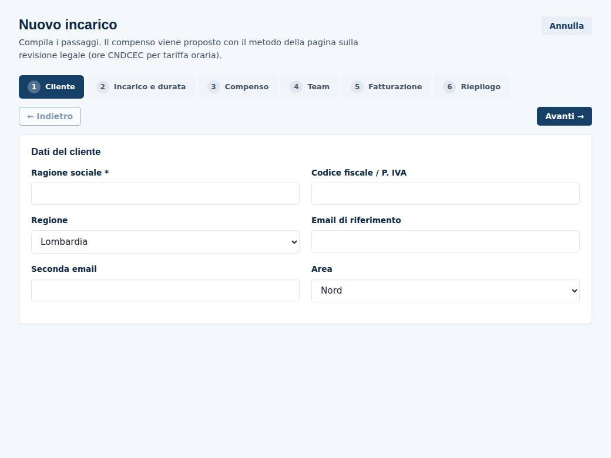
Passo 1 di 6, Cliente. Si arriva qui dal pulsante «+ Nuovo incarico», presente sia nel Cruscotto sia nella sezione Incarichi. I sei passi in cima restano sempre cliccabili. -
Incarico e durata
Qui si stabilisce che tipo di incarico è e quanto dura. Il tipo distingue la revisione legale dalla revisione volontaria; il primo esercizio è l'anno da cui parte l'incarico.
Per la revisione legale il periodo è vincolato al triennio: scelto il primo esercizio, il programma calcola gli esercizi coperti e adegua da solo i campi, che non vanno forzati a mano. Per la revisione volontaria il periodo è libero.
La data inizio (nomina) è la data della delibera assembleare. La data fine (approvazione ultimo bilancio) è quella che conta di più nell'uso quotidiano: da lei dipende l'etichetta di stato che vedrai negli elenchi e nel cruscotto, e quindi la comparsa dell'incarico tra quelli in scadenza. Se la data non è ancora nota si può lasciare una nota al posto della data: il programma la riporta così com'è, senza calcolare una scadenza inventata.
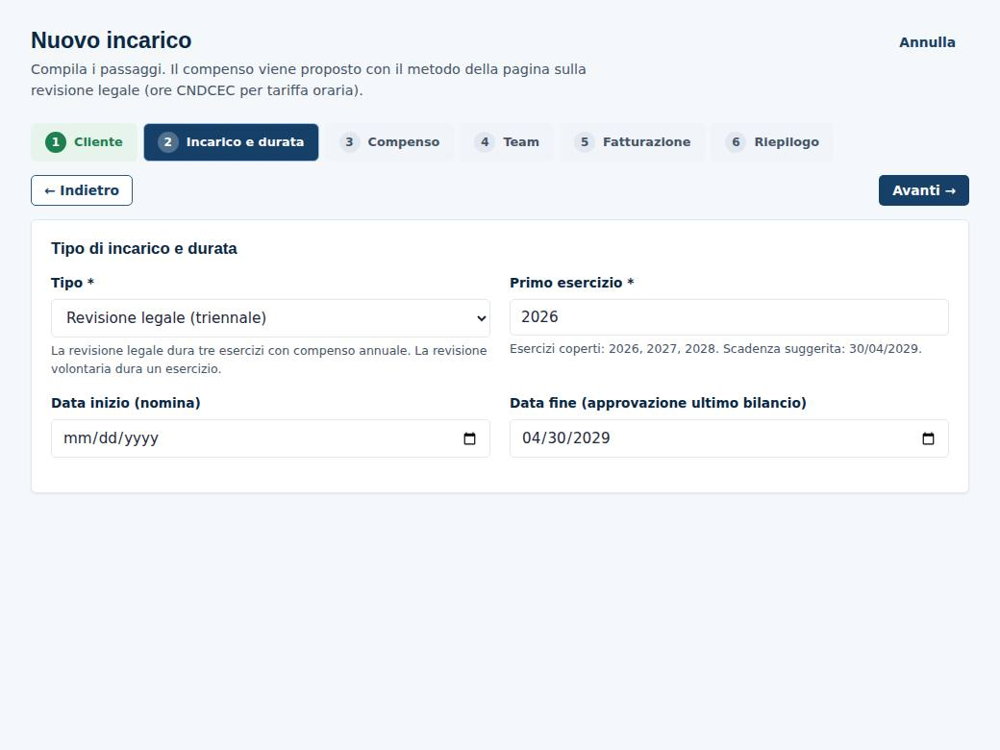
Passo 2 di 6, Incarico e durata. Sotto il primo esercizio una riga di aiuto indica quali esercizi risultano coperti dal periodo scelto. -
Compenso
Questo passo non chiede un importo: lo calcola, con il metodo della pagina sulla revisione legale (media dimensionale, ore base CNDCEC, correttivi di settore e rischio, tariffa oraria).
Si inseriscono totale attivo patrimoniale e ricavi delle vendite della società: dalla loro media dimensionale nascono le ore base. Il settore di attività e il rischio incarico applicano i correttivi previsti, per esempio un venti per cento in più per un rischio moderato.
Le ore si possono poi ritoccare: l'aumento manuale ore base agisce sul totale, mentre le ore extra per casistiche coprono le situazioni che allungano il lavoro (consolidato ricorrente, principi IFRS, sistemi IT e data analytics, altre casistiche ricorrenti, revisione volontaria dell'anno precedente, primo anno o subentro; le ultime due valgono solo per il primo anno). La tariffa oraria media converte le ore in euro. Le note sul rischio restano sulla scheda dell'incarico e spiegano a chi legge come si è arrivati a quel numero.
Il risultato è una proposta di compenso, non un vincolo: l'importo effettivo di ciascun esercizio si fissa al passo 5.
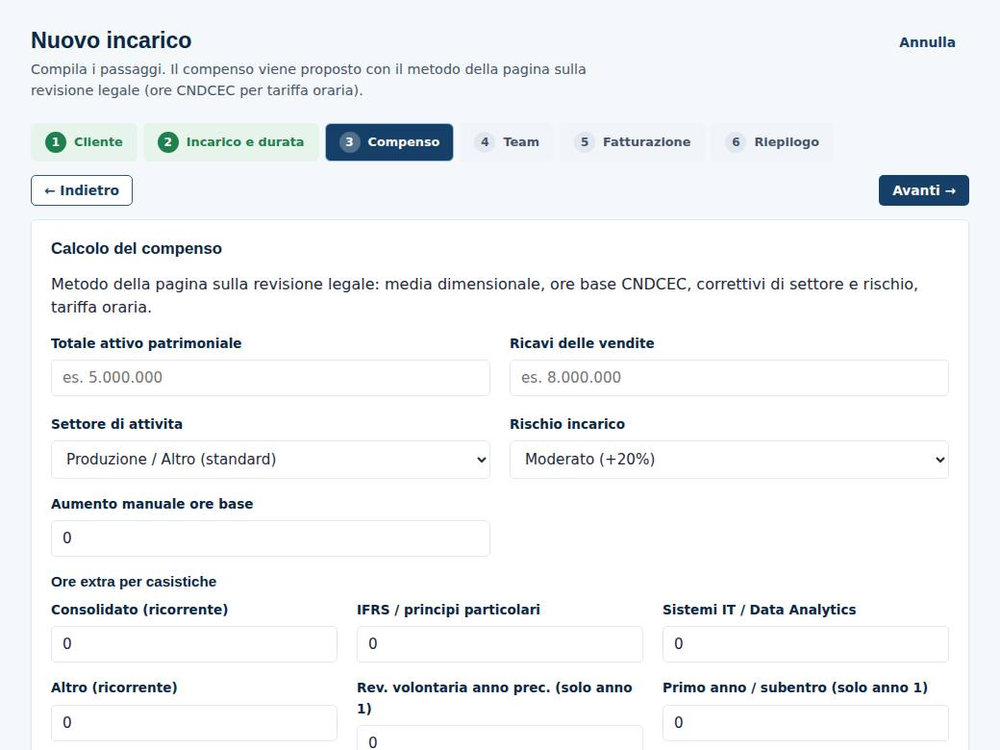
Passo 3 di 6, Compenso. Il calcolo è trasparente: cambiando un parametro si vede subito l'effetto sulle ore e sull'importo proposto. -
Team
Si indica chi lavora sull'incarico. Responsabile incarico e responsabile qualità sono obbligatori; il referente e i componenti del team di revisione sono facoltativi ma utili, perché sono loro i destinatari delle comunicazioni ai team.
Le tendine propongono soltanto le persone dell'anagrafica che hanno spuntato il ruolo professionale corrispondente e che sono attive. Se una persona non compare, il motivo è quasi sempre uno di questi: non è ancora in anagrafica, non ha la spunta del ruolo, oppure è stata disattivata. In tutti e tre i casi si passa da Aderenti Revilaw e si torna qui.
Per il team ci sono le caselle di tutte le persone attive, con i pulsanti Seleziona tutti e Deseleziona per i gruppi numerosi. I nomi scelti qui alimentano la sezione Responsabili e determinano chi riceve i messaggi inviati dalla sezione Comunicazione teams di revisione.
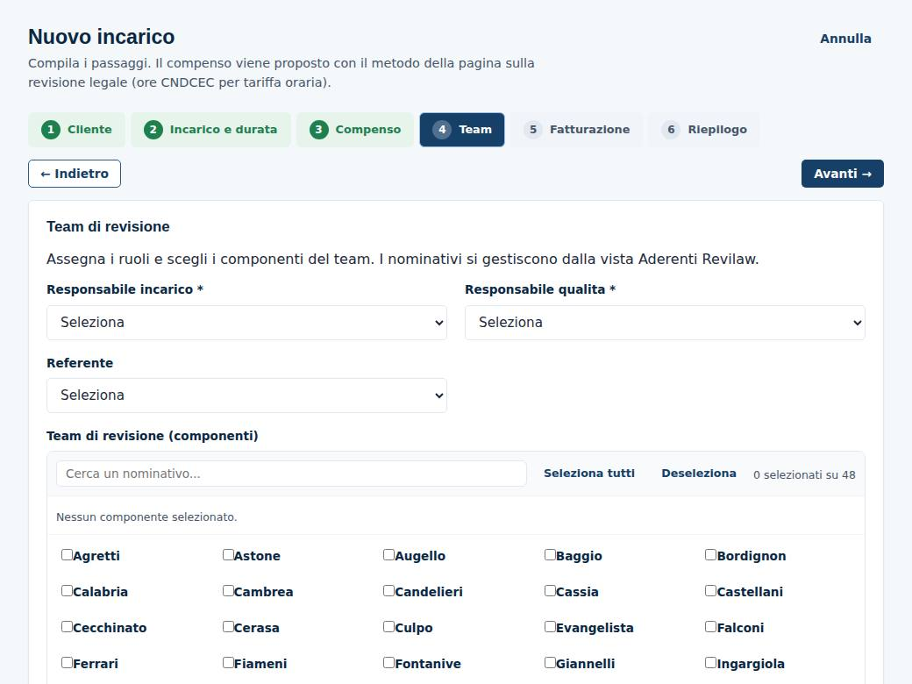
Passo 4 di 6, Team. Il collegamento fra persona e incarico avviene per cognome: cambiando il cognome in anagrafica, il programma aggiorna anche gli incarichi che lo citano. -
Fatturazione
È il passo che determina i numeri veri dell'incarico, quindi merita attenzione. La modalità di fatturazione (mensile, trimestrale, annuale o specifica) genera le rate; per la revisione legale triennale la scelta predefinita è trimestrale. Il gruppo di fatturazione serve a fatturare insieme più incarichi, per esempio le società di uno stesso gruppo: si lascia vuoto se l'incarico si fattura da solo.
Inizio e fine fatturazione restringono il periodo. Lasciandoli vuoti la fatturazione parte subito e non ha fine: sotto i due campi una riga indica in chiaro da quale trimestre si comincia e con quale si finisce, così si verifica a colpo d'occhio.
La casella spese generali forfettarie aggiunge una percentuale sugli onorari, standard cinque per cento, a copertura di tecnologia, banche dati, software, segreteria e comunicazione. La percentuale scelta vale sia sulle scadenze sia nella clausola della lettera d'incarico.
In fondo ci sono i periodi di fatturazione, un riquadro per esercizio. Ogni riga è una scadenza, con la sua data e il suo importo: si possono modificare, eliminare o aggiungere. Vale una regola sola, ed è la più importante del passo: il compenso di un esercizio è la somma delle sue righe. Quello che scrivi qui è quello che finisce nella sezione Fatturazione, nei report compensi e nella lettera. Un esercizio senza righe resta a zero e non viene fatturato.
I rimborsi delle spese vive (viaggi, vitto, alloggio) non si indicano qui: si aggiungono scadenza per scadenza nella sezione Fatturazione, dove il campo si può anche congelare per impedire modifiche successive.
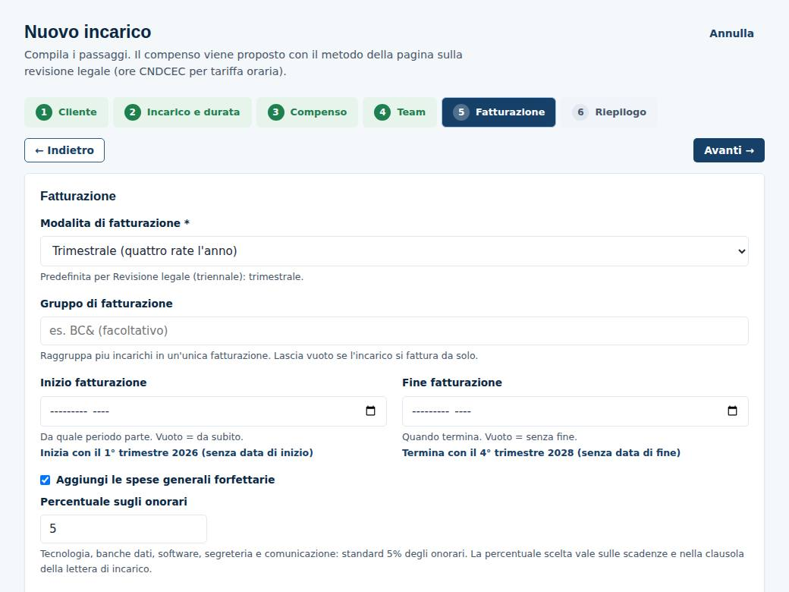
Passo 5 di 6, Fatturazione. L'intestazione di ogni esercizio riepiloga quanti periodi contiene, il totale degli onorari e il totale delle spese generali. -
Riepilogo e salvataggio
L'ultimo passo raccoglie tutto quanto inserito, così si controlla prima di salvare. Se qualcosa non torna, si torna al passo interessato cliccando il suo numero in cima: i dati già inseriti restano.
Al salvataggio l'incarico entra come proposta. Questo significa che compare negli elenchi e nel riquadro delle proposte del cruscotto, ma non è ancora conteggiato nei totali dei compensi né nel piano di fatturazione. Diventa un incarico a tutti gli effetti solo quando lo confermi, e la conferma si dà quando il cliente ha accettato.
Il salvataggio finisce nel Registro modifiche con il tuo nome e la data.
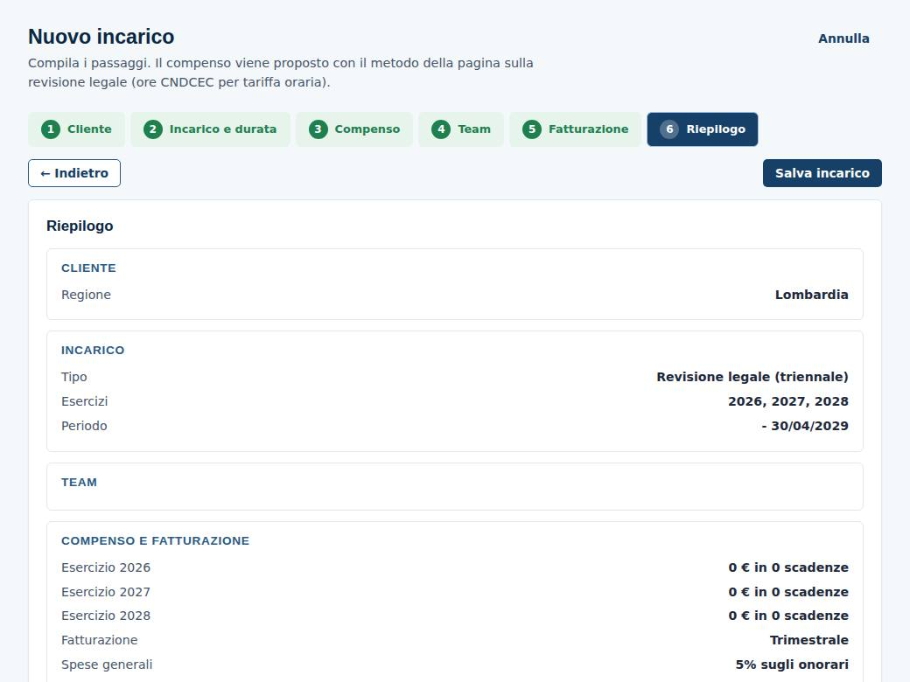
Passo 6 di 6, Riepilogo. Il controllo completo dei campi obbligatori scatta qui, al salvataggio: nei passi precedenti si può andare avanti e indietro liberamente.
Dal Cruscotto, nel riquadro «Proposte in attesa di conferma», si sceglie: Conferma se il cliente ha accettato, Modifica per rielaborare la proposta e rigenerare il PDF della lettera, Non accettato se il cliente ha rifiutato, e l'incarico passa alla scheda «Non accettati».
Aprire e modificare un incarico
-
Trova l'incarico
La sezione Incarichi è divisa in quattro schede, che separano ciò che è in corso da ciò che è chiuso: Attivi, Terminati, Dismessi e Non accettati. Se un incarico non lo trovi, con ogni probabilità sei nella scheda sbagliata.
Per restringere l'elenco ci sono due strumenti che si combinano. La ricerca guarda contemporaneamente tutte le colonne: basta un pezzo di ragione sociale, un codice fiscale o il nome di una regione. I filtri di colonna agiscono su un campo alla volta e accettano sia un testo digitato sia un valore scelto fra i suggerimenti, che sono i valori realmente presenti in quella colonna. Quando un filtro è attivo compare il conteggio delle righe visibili sul totale, utile per accorgersi di aver lasciato un filtro acceso.
Il pulsante Esporta CSV scarica esattamente le righe che stai vedendo, filtri compresi, con una colonna per ciascun anno con compensi.
Elenco incarichi. Un clic su una riga apre il dettaglio dell'incarico. -
Usa il menu Azioni della riga
L'ultima colonna contiene il pulsante Azioni, che apre il menu dei comandi disponibili su quell'incarico: Modifica per riaprire la creazione guidata sui dati esistenti, Rinnova per aprire un nuovo periodo partendo da quelli attuali, Termina e Dimissioni per chiuderlo, ed Elimina, riservata ad amministratore e titolare.
Il menu resta ancorato alla riga da cui è uscito e si chiude da solo cliccando altrove o scorrendo la pagina. Se non vedi il pulsante Azioni, il tuo ruolo ha la sezione Incarichi in sola lettura.
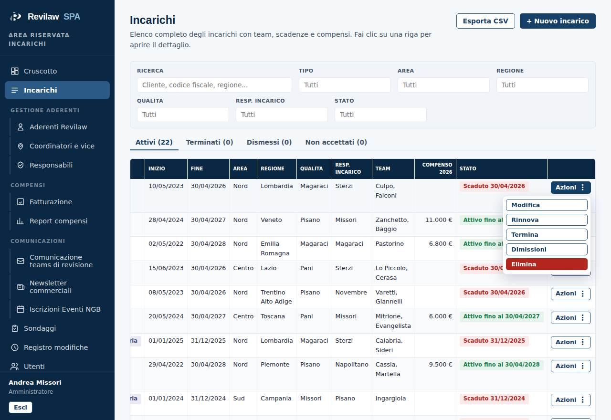
Menu Azioni. A menu aperto il pulsante resta acceso in blu pieno, così si vede da quale riga escono le voci. -
Oppure apri il dettaglio
Il dettaglio raccoglie in una pagina sola tutto ciò che riguarda l'incarico: anagrafica del cliente, tipo e durata, team, compenso di ciascun esercizio, piano di fatturazione con le singole scadenze e storico delle modifiche con autore e data.
Da qui si generano anche la lettera d'incarico su carta intestata e la proposta da consegnare al cliente. Il pulsante Elenco in alto riporta alla sezione da cui sei entrato, nel punto in cui eri: se venivi dal cruscotto torni al cruscotto, se venivi da Coordinatori e vice torni a quella scheda.
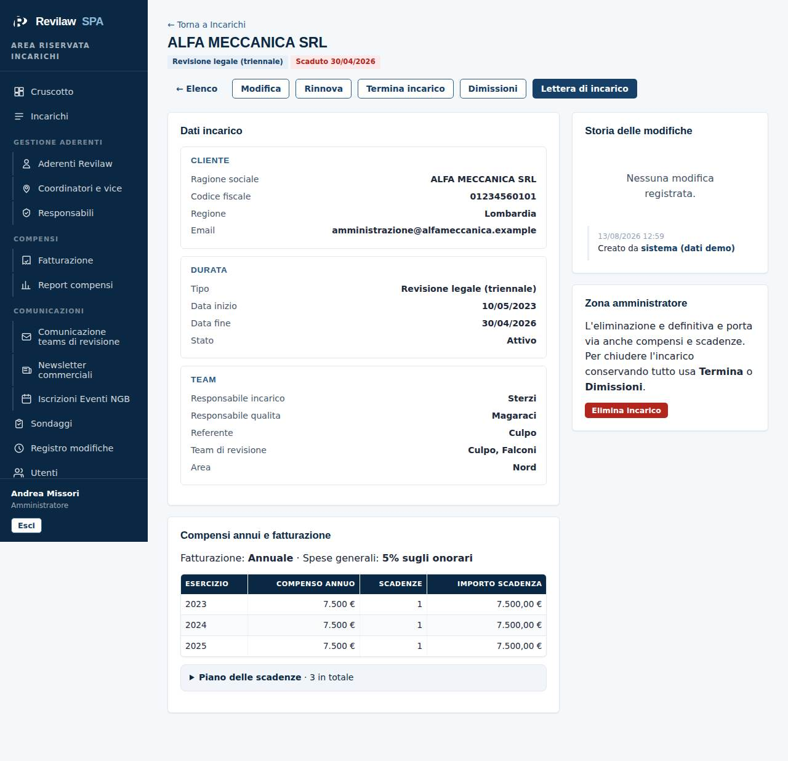
Dettaglio dell'incarico. Il pulsante «Elenco» in alto riporta alla sezione da cui sei entrato, nel punto in cui eri.
Chiedere la correzione di un dato
Quando un dato è sbagliato e non lo si può (o non lo si deve) correggere da sé, non lo si chiede a voce: lo si chiede da qui. La richiesta resta scritta, è indirizzata a un equity partner, e tutti i messaggi che la riguardano restano raggruppati sulla stessa scheda, invece di disperdersi tra telefonate e email separate.
La sezione Richieste di correzione compare nel menu a tutti gli utenti, qualunque sia il loro ruolo: è pensata proprio per chi ha l'accesso in sola lettura, come il coordinatore e il vice. Restano esclusi soltanto i ruoli «solo sondaggio».
-
Apri una nuova richiesta
Dalla sezione Richieste di correzione premi «+ Nuova richiesta». Se il dato sbagliato l'hai davanti mentre guardi un incarico, c'è una scorciatoia: nel dettaglio dell'incarico il pulsante «Chiedi una correzione» apre la stessa finestra con l'incarico già selezionato.
La prima scelta è cosa riguarda la richiesta: un incarico specifico oppure una funzionalità generale dell'area (il cruscotto, la fatturazione, i propri recapiti, gli accessi e così via). Scegliendo un incarico, l'elenco propone solo quelli che il tuo ruolo può vedere.
-
Indica regione e destinatario
La regione di riferimento decide chi resta in copia: il coordinatore e il vice di quel territorio. Se la richiesta riguarda un incarico, la regione è quella dell'incarico e non si tocca; se riguarda una funzionalità generale la scegli tu, e puoi anche lasciarla vuota quando la segnalazione non è territoriale.
Il riquadro in fondo alla finestra dice, prima di inviare, chi resterà in copia: se la regione indicata non ha un coordinatore o un vice in anagrafica, lo scrive invece di lasciarlo intuire.
Il destinatario si sceglie da una tendina che elenca gli equity partner. Se la tendina è vuota, nessuna scheda in Aderenti Revilaw ha la casella Equity partner spuntata (con scheda attiva ed email): finché non c'è, la richiesta non si può indirizzare.
-
Scrivi cosa non torna
L'oggetto è la riga con cui riconoscerai la richiesta nell'elenco. Il campo Dato da correggere è facoltativo e serve a dire di quale campo si parla («Data fine», «Compenso 2026», «Responsabile incarico»). Nella descrizione conviene scrivere tre cose: cosa c'è adesso, cosa dovrebbe esserci e da dove risulta.
Premendo Invia richiesta parte un riepilogo per email a chi scrive e all'equity partner destinatario. Se il servizio di posta non è disponibile la richiesta viene comunque registrata, e il programma lo dice apertamente invece di far credere che la mail sia partita.
-
Segui la richiesta: i messaggi restano insieme
Aprendo una richiesta trovi l'intestazione (chi l'ha scritta, a chi è indirizzata, l'incarico o la funzionalità, la regione, chi è in copia) e sotto lo scambio completo dei messaggi, in ordine di tempo. Si risponde dal riquadro in fondo: la risposta resta nella scheda e viene spedita per email a chi ha scritto e a chi ha ricevuto la richiesta.
Anche i cambi di stato entrano nello scambio, con chi li ha fatti e quando: così, a distanza di mesi, la storia della correzione si legge tutta in un posto solo.
Quando su una richiesta c'è un messaggio che non hai ancora letto, accanto alla voce Richieste di correzione nel menu compare un numero, e la riga in elenco è segnata a lato.
-
Lavorare le richieste (equity partner)
L'equity partner destinatario — e con lui gli altri equity, i founding partner, l'amministratore e il titolare — dispone dei pulsanti di stato: Prendi in carico, Segna come corretta, Respingi e, su una richiesta chiusa, Riapri. Chi ha scritto la richiesta non la chiude da sé: può solo ritirarla.
Le schede in alto dividono le richieste da lavorare da quelle chiuse; chi le vede tutte ha in più l'interruttore Tutte / Solo le mie. Il filtro sopra l'elenco cerca per oggetto, cliente o persona e restringe per stato, ambito e regione.
Chi l'ha scritta e l'equity partner a cui è indirizzata la vedono sempre. Il coordinatore e il vice della regione indicata la trovano nel loro elenco: è la traccia che resta sul territorio. Tutti gli equity partner e i founding partner vedono ogni richiesta dello studio, come l'amministratore e il titolare. Gli altri utenti vedono solo le proprie. Le qualifiche di equity e founding partner si spuntano sulla scheda della persona, in Aderenti Revilaw: valgono qualunque sia il ruolo con cui quella persona accede.
Anagrafica: aggiungere una persona e darle i ruoli
-
Apri Aderenti Revilaw
L'elenco mostra per ogni persona cognome e nome, i recapiti, la regione di sede, i ruoli professionali con una spunta ciascuno, il numero di incarichi associati e lo stato. Le schede in cima separano le persone attive da quelle disattivate e eliminate.
Il numero nella colonna degli incarichi è cliccabile e apre l'elenco degli incarichi in cui quella persona compare con un ruolo qualsiasi, che sia responsabile qualità, responsabile incarico, referente o componente del team.
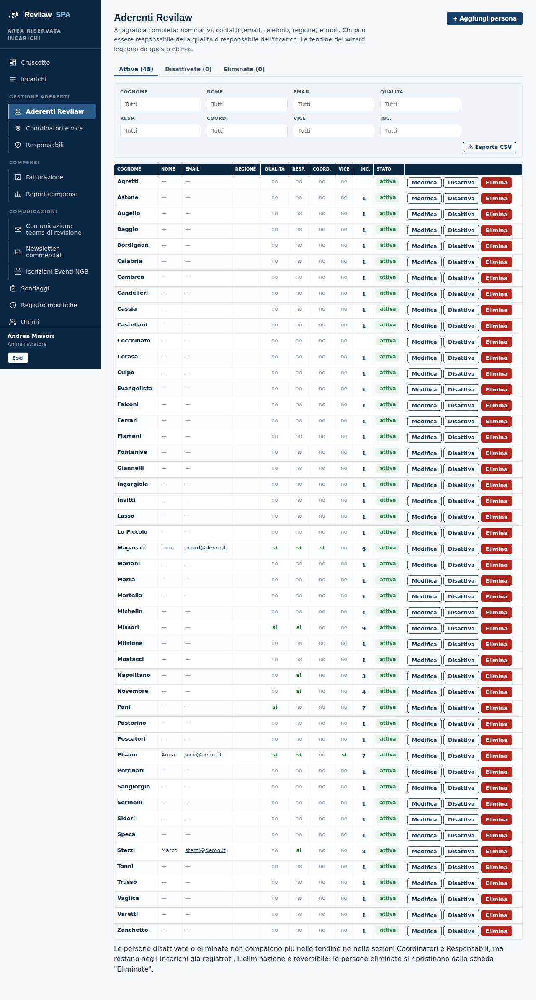
Aderenti Revilaw. Il numero nella colonna «Inc.» è cliccabile e apre l'elenco degli incarichi in cui quella persona compare, con qualunque ruolo. -
Compila la scheda
La scheda chiede nome, cognome, email, telefono, regione di sede, provincia, località e indirizzo, poi i ruoli professionali. Il cognome è il campo che collega la persona agli incarichi: cambiandolo, il programma aggiorna anche gli incarichi che lo citano, così non restano nomi orfani.
L'email merita attenzione particolare, perché è l'aggancio fra la scheda e l'utenza di accesso. Deve essere identica a quella registrata nella sezione Utenti: se differisce anche di poco, il programma non riesce a collegare la persona a chi si è collegato, e per un coordinatore questo significa non vedere alcun incarico.
La regione di questa scheda è la sede della persona, dove ha lo studio o l'ufficio. Non assegna alcun territorio: le regioni coordinate si spuntano più in basso, tra i ruoli, e sono un elenco a parte.
I sei ruoli professionali (responsabile qualità, responsabile incarico, coordinatore territoriale, vice coordinatore territoriale, equity partner, founding partner) decidono in quali tendine la persona comparirà e in quali sezioni sarà elencata. Non concedono permessi di accesso: quelli si assegnano dalla sezione Utenti.
Le ultime due caselle riguardano le richieste di correzione dati. Un equity partner compare nella tendina dei destinatari, quindi è a lui che le richieste si possono indirizzare: perché ci finisca, la scheda deve essere attiva e avere l'email. Equity e founding partner vedono inoltre tutte le richieste dello studio, non solo le proprie.
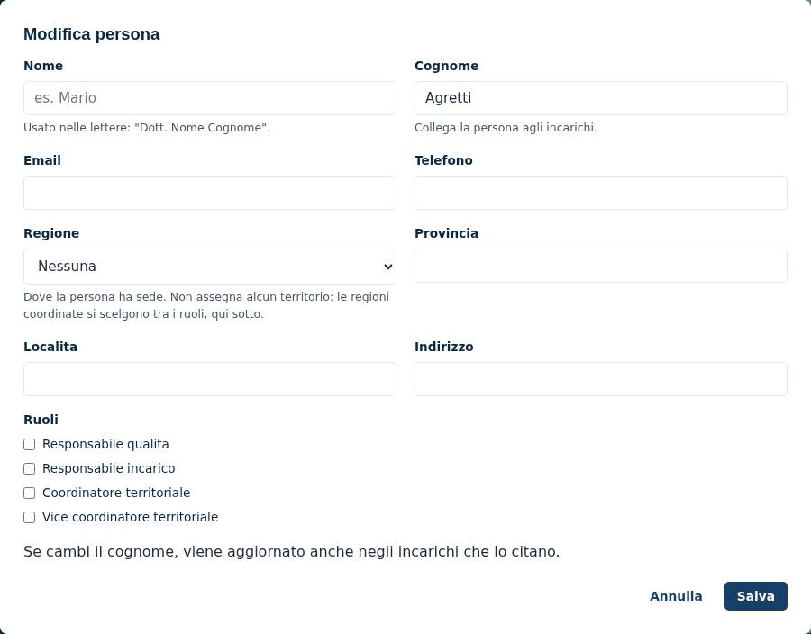
Scheda persona. Il campo Regione è la sede della persona e non assegna alcun territorio: le regioni coordinate si scelgono tra i ruoli, più sotto. -
Disattivare invece di eliminare
Chi lascia lo studio non va cancellato, va disattivato. La persona disattivata sparisce dalle tendine e dalle sezioni Coordinatori e vice e Responsabili, ma resta negli incarichi già registrati, che continuano a mostrare correttamente chi li ha seguiti.
Anche l'eliminazione è reversibile: la persona passa alla scheda «Eliminate», da cui si ripristina in qualsiasi momento, e resta comunque negli incarichi storici. Ogni operazione finisce nel Registro modifiche.
Assegnare le regioni a un coordinatore
È il passaggio che determina che cosa vedrà un coordinatore o un vice. Finché non si spunta almeno una regione, quella persona non vedrà alcun incarico.
-
Spunta il ruolo, poi le regioni
Apri la scheda della persona da Aderenti Revilaw e scendi fino a Ruoli. Spunta Coordinatore territoriale oppure Vice coordinatore territoriale, o entrambi se la persona ricopre i due incarichi in territori diversi.
Appena metti la spunta compare il riquadro Regioni coordinate, con l'elenco completo delle regioni italiane. Spunta quelle di sua competenza e salva. L'elenco è completo di proposito: la regione indicata più in alto nella scheda è la sede della persona e non entra da sola nel territorio, quindi se coordina anche la regione in cui ha sede va spuntata qui esplicitamente.
Senza alcuna spunta la persona non vedrà alcun incarico. È una scelta voluta: in mancanza di indicazioni il programma chiude anziché aprire.
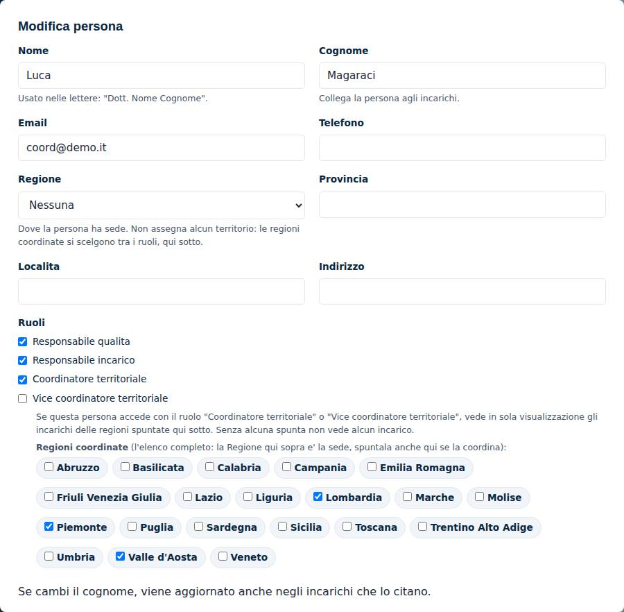
Regioni coordinate. Il riquadro compare solo dopo aver spuntato uno dei due ruoli. Qui la persona coordina Lombardia, Piemonte e Valle d'Aosta. -
Assegna il ruolo di accesso
Spuntare la casella in anagrafica non basta, perché quella spunta descrive la funzione professionale della persona, non i suoi permessi. Perché il filtro per territorio entri davvero in funzione, nella sezione Utenti l'utenza collegata a quella stessa email deve avere come ruolo «Coordinatore territoriale» o «Vice coordinatore territoriale».
Sono quindi due passaggi in due posti diversi, ed è la causa più frequente di malfunzionamento segnalata: la spunta c'è, ma l'utenza ha un altro ruolo e la persona continua a vedere tutti gli incarichi.
-
Verifica
Chiedi alla persona di accedere e di guardare due punti. In basso a sinistra, sotto il suo nome e il ruolo, deve comparire la riga «Regioni assegnate» con l'elenco corretto; quella riga resta visibile in ogni schermata. All'ingresso, inoltre, si apre una finestra di riepilogo che ripete ruolo, regioni, limite agli incarichi e livello di accesso.
Se in uno dei due punti compare «nessuna regione assegnata», la spunta non è stata salvata oppure l'email della scheda non coincide con quella dell'utenza.
Vedere gli incarichi di un territorio
-
Apri Coordinatori e vice
La sezione ha tre schede. Coordinatori e Vice coordinatori elencano le persone: per ciascuna, le regioni coperte, l'email e il numero di incarichi attivi in quel territorio. Per regione ribalta la lettura e parte dalle regioni.
Chi non ha spuntato alcuna regione compare comunque nell'elenco, con l'avviso «nessuna regione coordinata»: serve ad accorgersene, invece di scoprirlo quando quella persona segnala di non vedere nulla.
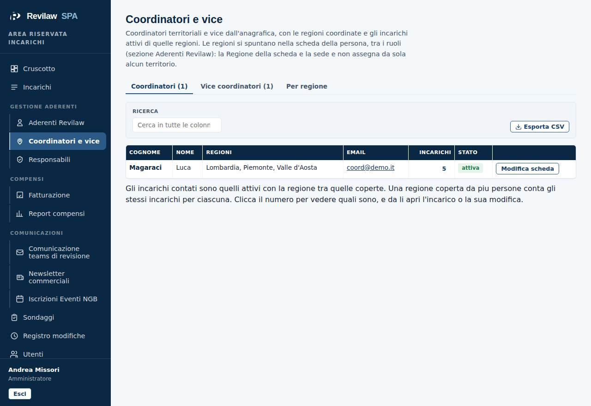
Coordinatori e vice. Una regione coperta da più persone conta gli stessi incarichi per ciascuna: il totale delle righe non è il totale degli incarichi. -
Clicca il numero per vedere quali sono
Il numero nella colonna Incarichi è un pulsante. Aprendolo compare l'elenco degli incarichi attivi di quel territorio con cliente, tipo, regione, responsabile qualità, responsabile incarico, scadenza e stato.
Da quell'elenco si arriva all'incarico in due modi: un clic sulla riga apre il dettaglio, il pulsante Modifica lo apre direttamente nella creazione guidata. Il pulsante Modifica compare solo a chi ha la scrittura sugli incarichi.
Il conteggio comprende gli incarichi in corso, proposte incluse, ed esclude quelli terminati, dismessi e non accettati. Se il tuo ruolo è limitato per regione, l'elenco segnala quanti incarichi restano fuori dal tuo territorio senza nominarli.
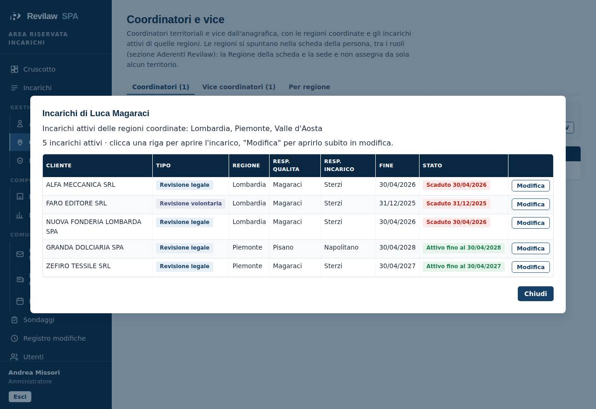
Incarichi del territorio. Chi ha l'accesso in sola visualizzazione vede l'elenco ma non il pulsante Modifica. -
Controlla le regioni scoperte
La scheda Per regione elenca le regioni con i rispettivi coordinatori, i vice e il numero di incarichi attivi. Anche qui il numero è cliccabile e apre l'elenco degli incarichi di quella regione.
Una regione che ha incarichi attivi ma nessuno che la coordini è marcata scoperta: è il controllo da fare periodicamente, perché indica lavoro senza un presidio territoriale.
Attenzione a un punto di lettura: una regione coperta da più persone conta gli stessi incarichi per ciascuna, quindi la somma dei numeri delle righe non è il totale degli incarichi dello studio.
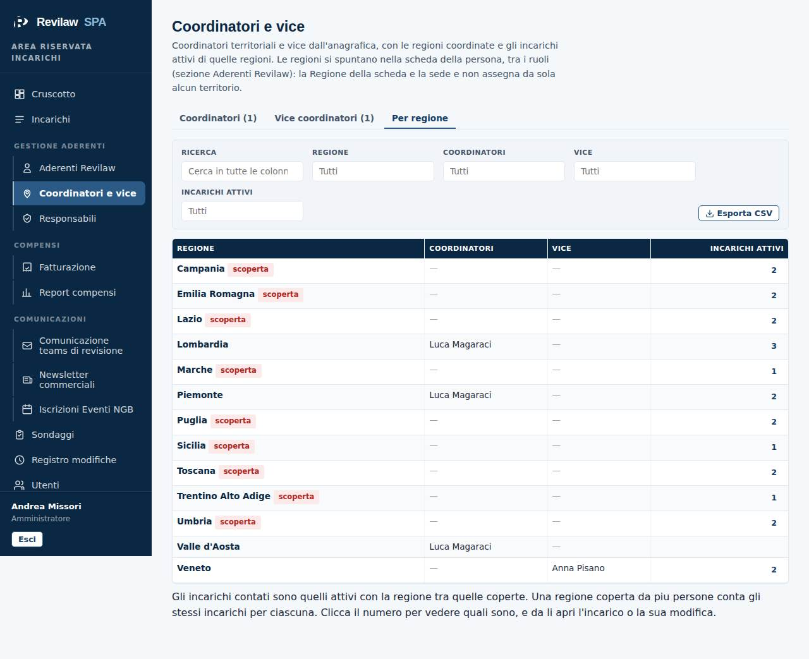
Per regione. Anche qui il numero degli incarichi attivi è cliccabile.
La lettura per responsabilità
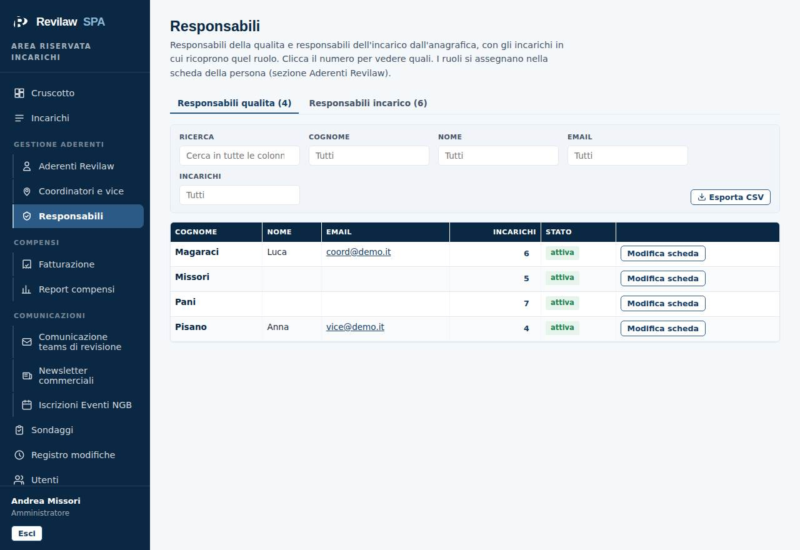
Compensi e fatture
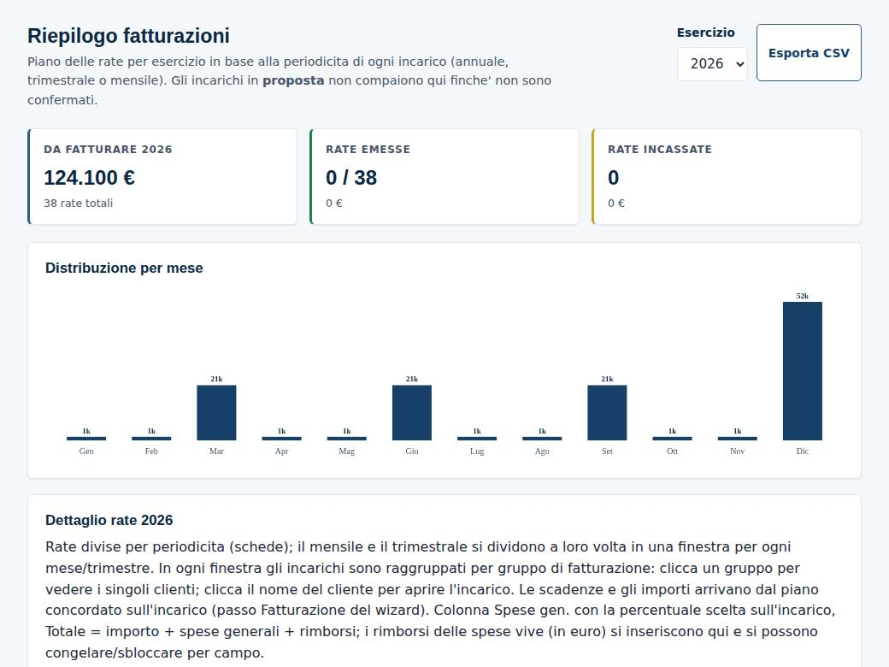
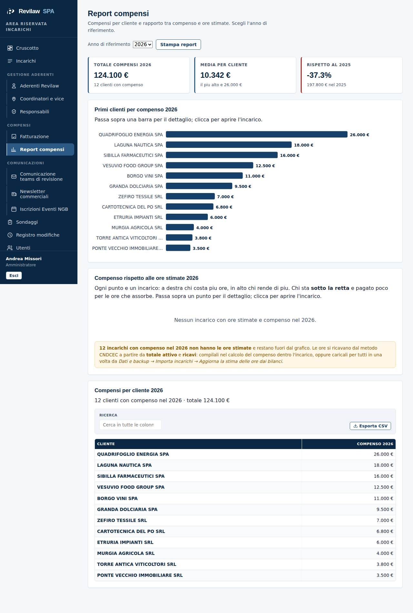
Comunicazioni
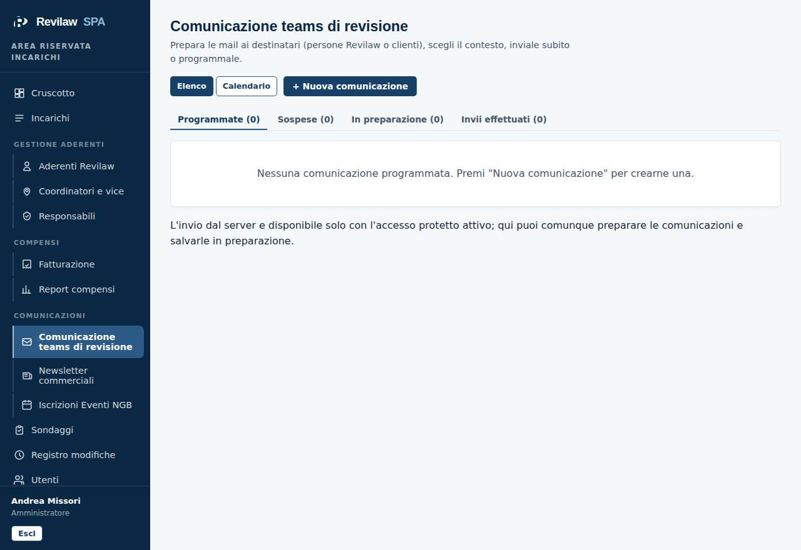
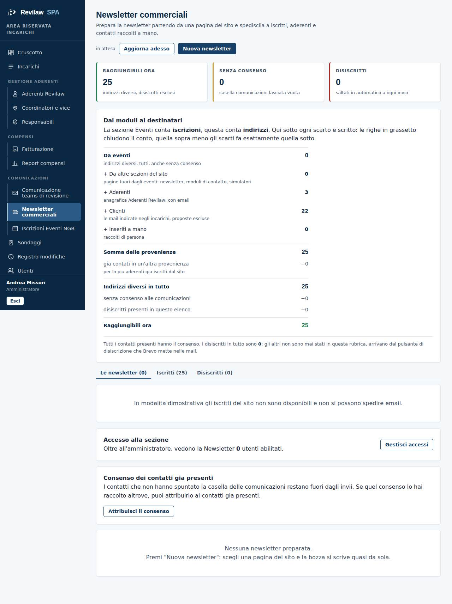
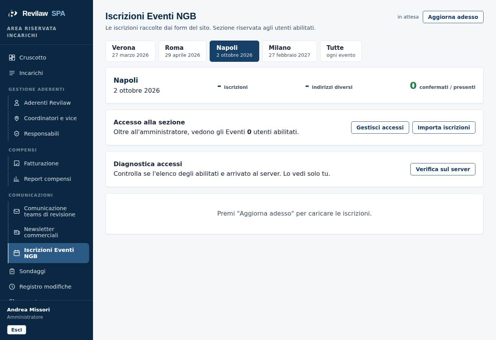
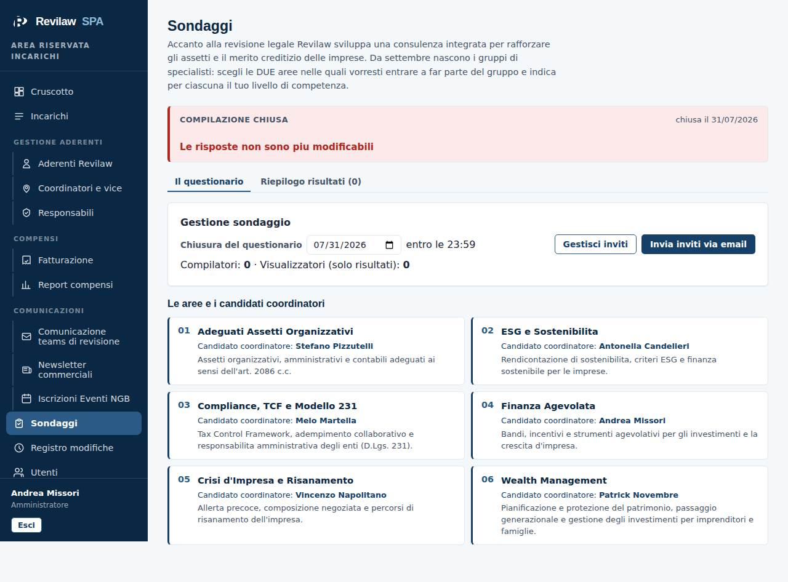
Comunicare un aggiornamento agli iscritti all'area
Quando l'area riservata cambia, chi la usa deve saperlo. Il pulsante «Comunica un aggiornamento», in testa alla sezione Comunicazioni, manda agli iscritti all'area l'annuncio di una novità già rilasciata: il riepilogo del contenuto lo prepara il programma, tu scegli quale aggiornamento annunciare e chi deve riceverlo.
Questo invio è riservato all'amministratore e al titolare: scrive a tutti gli iscritti all'area a nome dello studio, e non basta avere la scrittura sulle comunicazioni. Chi ha quel permesso continua a preparare e inviare le comunicazioni ordinarie, ma il pulsante degli aggiornamenti non lo vede.
Se ci sono novità mai annunciate, la sezione lo dice in un riquadro sopra le schede, con il titolo della più recente: così non restano aggiornamenti di cui nessuno sa nulla. Anche l'avviso compare solo a chi può inviarli.
-
Scegli l'aggiornamento
La tendina elenca gli aggiornamenti rilasciati, dal più recente, e segnala quali sono già stati comunicati. Finché non ne scegli uno non c'è nulla da inviare, e il pulsante di invio lo dice.
-
Leggi il riepilogo che il programma ha composto
Appena scegli, compare il riepilogo del contenuto: il titolo dell'aggiornamento, la data di rilascio, cosa cambia punto per punto, dove si trova nel programma e a chi interessa. È già il testo della mail, mostrato come lo leggerà chi la riceve; sopra, un'etichetta dice se quell'aggiornamento era già stato comunicato, quando e a quante persone.
L'oggetto si compila da solo con il titolo dell'aggiornamento e resta modificabile. La nota introduttiva è facoltativa: una riga tua che precede il riepilogo, per esempio per dire da quando si adotta la novità. Il pulsante Anteprima apre la mail come la vedrà il destinatario, firma compresa.
-
Escludi chi non deve riceverlo
L'elenco dei destinatari è quello degli iscritti all'area riservata: gli utenti abilitati e attivi, già tutti spuntati. Restano fuori d'ufficio le utenze disattivate e i ruoli «solo sondaggio», che delle sezioni di cui parlano gli aggiornamenti non vedono nulla.
Per escludere qualcuno togli la spunta. Il filtro in cima cerca per nome, indirizzo o ruolo, e i due pulsanti selezionano o deselezionano in blocco le righe filtrate. Sotto l'elenco il conteggio dice sempre quanti riceveranno la mail e quanti hai escluso.
-
Invia
Invia la mail spedisce subito. L'invio richiede l'accesso protetto attivo, come tutte le comunicazioni. Chi ha escluso resta scritto nella comunicazione salvata, e l'operazione finisce nel Registro modifiche.
L'annuncio si ritrova tra le comunicazioni, nella scheda Invii effettuati, con il contesto Aggiornamento area riservata: da lì si vede quando è partito, a quante persone e se qualche indirizzo è stato rifiutato. Se un aggiornamento va comunicato di nuovo — per esempio a chi è entrato dopo — basta rifare il giro escludendo chi l'ha già ricevuto.
Utenti, ruoli e registro
-
Registra l'utente
Nella sezione Utenti si aggiunge l'indirizzo email, il nome e il ruolo. L'utente riceverà la password richiedendola da solo dalla schermata di accesso: l'amministratore non la imposta e non la conosce.
Usa lo stesso indirizzo con cui la persona è registrata in Aderenti Revilaw. È da quella coincidenza che il programma capisce quale scheda appartiene a chi si è collegato, e per coordinatori e vice ne dipende l'intero filtro per territorio.
Chi non deve più entrare si disattiva invece di essere cancellato: l'utenza resta nel registro delle operazioni passate ma non consente più l'accesso.
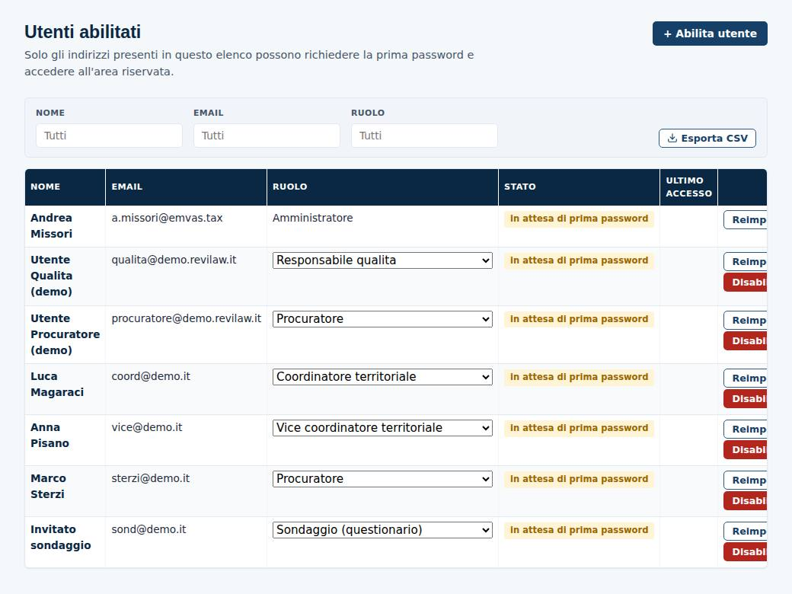
Utenti. Da qui si cambia il ruolo di una persona già registrata e si disattiva chi non deve più entrare. -
Configura il ruolo
Nella sezione Ruoli e permessi ogni ruolo è una scheda che riepiloga i livelli assegnati sezione per sezione. Il pulsante Modifica apre la finestra con una tendina per ciascuna delle otto sezioni configurabili, con i tre valori Nascosta, Sola lettura e Scrittura.
Si possono creare ruoli nuovi con il pulsante in alto. Ricorda che Utenti, Ruoli e permessi e Dati e backup non compaiono fra le sezioni configurabili: restano ad amministratore e titolare per costruzione, e nessun ruolo personalizzato può concederle.
Modificare un ruolo ha effetto su tutti gli utenti che lo hanno assegnato, dal loro accesso successivo.
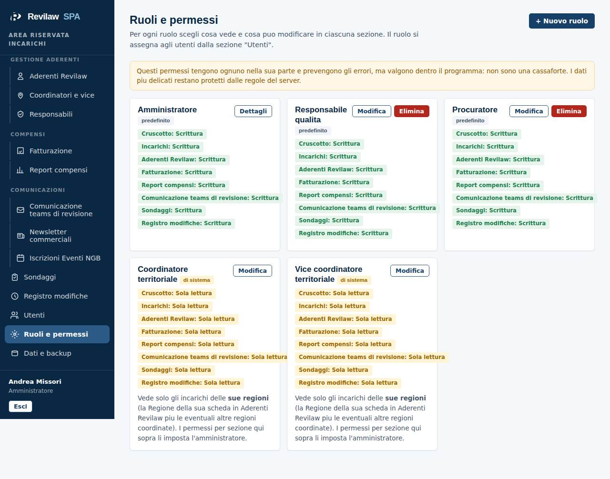
Ruoli e permessi. I ruoli di sistema riportano in chiaro che vedono solo gli incarichi delle proprie regioni. 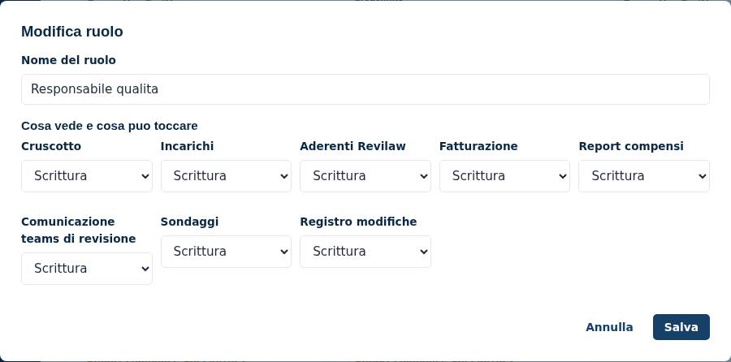
Modifica ruolo. Tre livelli per ogni sezione: Nascosta, Sola lettura, Scrittura. Il nome del ruolo è libero. -
Controlla il registro
Il Registro modifiche conserva ogni operazione con autore, data, entità toccata e dettaglio di ciò che è cambiato: creazioni e modifiche di incarichi, interventi sull'anagrafica, accessi, blocchi per tentativi falliti, cambi di password.
Non è modificabile né cancellabile. È lo strumento da usare quando un dato non torna: mostra chi lo ha cambiato e quando, senza bisogno di chiedere in giro.
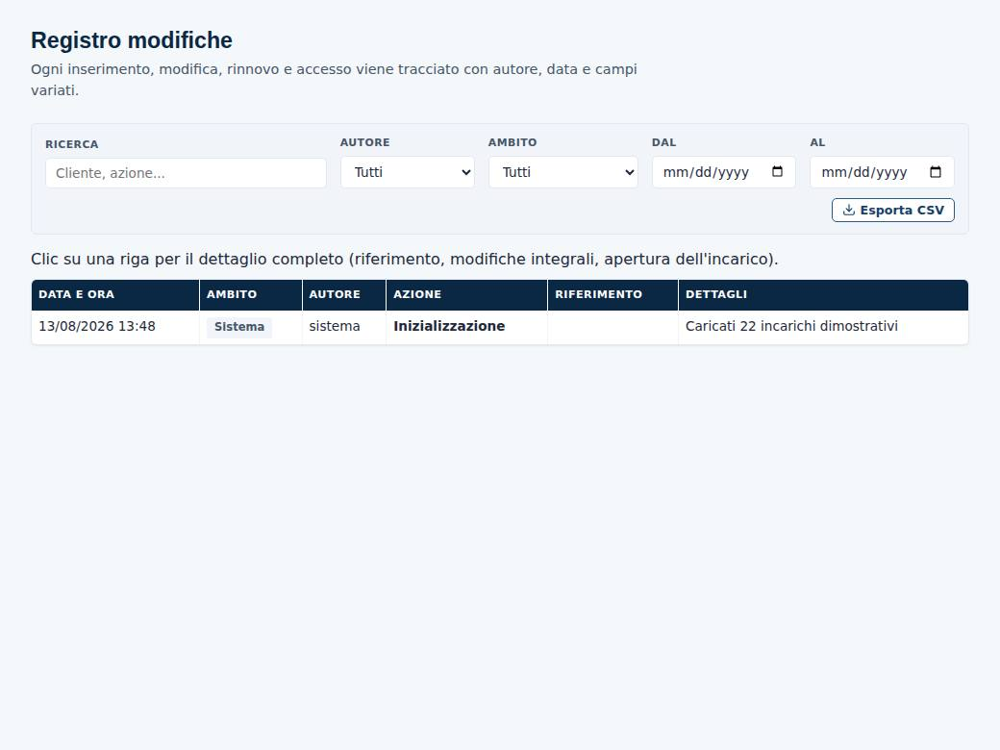
Registro modifiche. Utile quando un dato non torna: mostra chi lo ha cambiato e quando.
Dati e backup
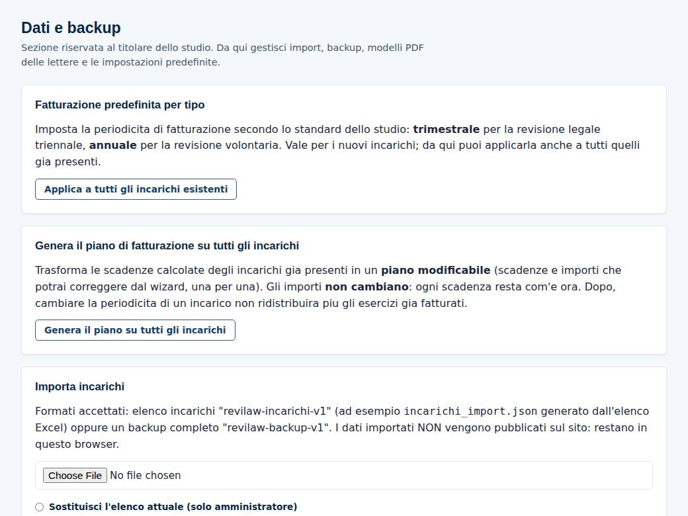
Glossario
I termini che nell'area riservata hanno un significato preciso, non sempre coincidente con l'uso corrente.
- Aderente
- Una persona dell'anagrafica dello studio. Può avere uno o più ruoli professionali e può avere, oppure no, un'utenza di accesso.
- Utente
- Un indirizzo email abilitato a entrare. L'utenza si crea nella sezione Utenti ed è collegata alla scheda dell'aderente attraverso l'email, che deve quindi coincidere.
- Ruolo
- Il profilo di permessi assegnato all'utenza. Stabilisce che cosa si vede e che cosa si può modificare.
- Ruolo professionale
- Le spunte sulla scheda dell'aderente: responsabile qualità, responsabile incarico, coordinatore territoriale, vice coordinatore territoriale, equity partner, founding partner. Descrivono la funzione nello studio, alimentano le tendine degli incarichi e decidono chi riceve e chi vede le richieste di correzione. Non concedono permessi di accesso.
- Ruolo di sistema
- Coordinatore territoriale e Vice coordinatore territoriale. L'amministratore può cambiarne i livelli per sezione, ma non il filtro per territorio, che è parte del ruolo.
- Regione dell'incarico
- La regione scritta sulla scheda dell'incarico. È il solo dato che decide quali coordinatori lo vedono. Non va confusa con l'area (Nord, Centro, Sud) né con la località del cliente.
- Regioni coordinate
- Le regioni spuntate sulla scheda di un aderente sotto i ruoli. Sono il territorio di un coordinatore o di un vice. La Regione della scheda è invece la sede della persona e non assegna alcun territorio.
- Regione scoperta
- Una regione con incarichi attivi e nessuno che la coordini. La scheda Per regione la segnala.
- Responsabile qualità
- Chi risponde della qualità di un incarico. Il collegamento tra persona e incarico avviene per cognome.
- Responsabile incarico
- Chi conduce l'incarico. Stesso meccanismo di collegamento.
- Proposta
- Un incarico preparato ma non ancora accettato dal cliente. Non entra nei totali né nella fatturazione.
- Piano di fatturazione
- L'insieme delle rate generate dal compenso e dalla periodicità scelta. Si consulta nella sezione Fatturazione.
- Gruppo di fatturazione
- Un'etichetta che raccoglie più incarichi fatturati insieme, per esempio le società di uno stesso gruppo.
- Registro modifiche
- Il diario delle operazioni: chi, quando, che cosa. Non modificabile.
- Titolare
- Il proprietario dello studio, individuato dal suo indirizzo email. Ha i poteri dell'amministratore più la sezione Dati e backup.
- Equity partner
- Il riferimento a cui si chiedono modifiche e correzioni dei dati. È una spunta sulla scheda dell'aderente: solo chi ce l'ha compare nella tendina dei destinatari delle richieste di correzione, e vede tutte le richieste dello studio.
- Founding partner
- Un'altra spunta sulla scheda dell'aderente: non riceve le richieste di correzione, ma le vede tutte, come gli equity partner.
- Richiesta di correzione
- La segnalazione scritta di un dato sbagliato, indirizzata a un equity partner. Raccoglie in un'unica scheda tutti i messaggi che la riguardano e resta visibile a chi l'ha scritta e al coordinatore e vice della regione indicata.
Problemi ricorrenti
- Un coordinatore non vede alcun incarico
- Sulla sua scheda in Aderenti Revilaw non è spuntata nessuna regione, oppure l'email della scheda è diversa da quella con cui accede. Le due devono coincidere.
- Un coordinatore vede tutti gli incarichi
- Il ruolo assegnato in Utenti non è uno dei due di sistema. Un ruolo creato a mano non applica il filtro per territorio, anche se si chiama «coordinatore».
- Una voce di menu non compare
- Il ruolo ha quella sezione su «Nascosta», oppure si tratta di una sezione fuori dai ruoli: Utenti e Ruoli sono di amministratore e titolare, Dati e backup del solo titolare, Newsletter ed Eventi richiedono l'abilitazione singola.
- Un incarico non compare nei totali
- Probabilmente è ancora in proposta: le proposte non entrano in fatturazione né nei compensi finché non vengono confermate dal Cruscotto.
- Un incarico non compare a chi coordina la sua regione
- Controlla la regione scritta sull'incarico: è quella, e non la sede del cliente o l'area, a decidere chi lo vede. Differenze di grafia (accenti, trattini, maiuscole) non contano: il confronto le ignora.
- Il pulsante di modifica non c'è
- Il ruolo ha quella sezione in sola lettura. Per i coordinatori è la regola: consultano, non modificano. Le correzioni si chiedono a un equity partner dalla sezione Richieste di correzione.
- La tendina degli equity partner è vuota
- Nessuna scheda in Aderenti Revilaw ha la casella Equity partner spuntata, oppure chi ce l'ha è disattivato o senza email. Servono tutte e tre le condizioni perché compaia tra i destinatari delle richieste.
- La richiesta è partita ma la mail no
- Il riepilogo per email esce dal servizio dello studio, disponibile solo con l'accesso protetto attivo; l'invio è anche limitato per evitare raffiche (una ventina di secondi tra un messaggio e il successivo). La richiesta in ogni caso è registrata e visibile a tutti i destinatari nell'area riservata: il programma dice sempre quando la mail non è partita.
- Un coordinatore non trova una richiesta del suo territorio
- Conta la regione della richiesta: per un incarico è quella dell'incarico, per una segnalazione generale è quella scelta da chi scrive (che può anche averla lasciata vuota). Le regioni coordinate si leggono dalla scheda in Aderenti Revilaw, non dal ruolo di accesso.
- Sono uscito senza volerlo
- Dopo 30 minuti senza attività la sessione si chiude. Basta rientrare: nessun dato viene perso, tranne quanto stavi scrivendo in una finestra aperta.
Manuale dell'area riservata incarichi di Revilaw S.p.A. Le schermate sono state raccolte sull'ambiente dimostrativo, con dati fittizi: nomi di società, importi e nominativi non corrispondono ad alcun cliente reale. Aggiornato al 13 agosto 2026.